1893 2026
This is an AI modernization of Pillow Problems into contemporary English. The original is available from Project Gutenberg. Also available as an epub.
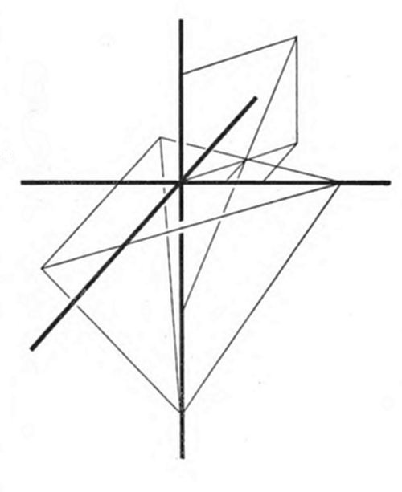
I take this opportunity of explaining why it is that, as stated in the note to my last Preface, I have used symbols of my own to stand for the words "sine" and "cosine".
[Modern note: Carroll drew two small symbols for these, described below in his own words. They exist in no font, and the printed editions after his own have never reproduced them; this edition writes "sin" and "cos" throughout, as the rest of the notation has been modernised.]
Using some symbol or other needs, I suppose, no more justification than using + and − for "plus" and "minus".
These particular ones come from the old theory of Trigonometry, in which sines, cosines and the rest were actual lines.
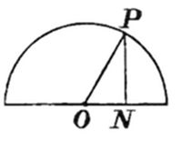
In this diagram, if OP is taken as the unit of length, then PN is the sine of the angle NOP and ON is its cosine.
In each of my two symbols I have kept the semicircle. In the symbol for sine I have simply moved PN into the middle; and in the symbol for cosine I have lengthened ON, carrying it a little beyond the curve so as to avoid confusion with the existing symbol for "semicircle".
I also take this opportunity of adding a sort of corollary, thought out lately, to the solution of Problem 59.
If a, b, c are given lengths, then for the Tetrahedron to be possible at all they must meet certain conditions:
(1) They have to form the sides of a Triangle, so any two of them must be greater than the third.
(2) The three angles of that Triangle have to form a solid angle, so any two of those angles must together be greater than the third; hence any two of them must together be greater than 90°; hence any one of them must be less than 90°; hence the cosine of any one of them must be greater than 0 — that is, b2 + c2 − a2 must be greater than 0, and so on. So a, b, c must be such that the squares of any two of them are together greater than the square of the third.
For example, the lengths 2, 3, 4 would not do, since although they meet the first condition, 2 + 3 being greater than 4, they fail the second: 22 + 32 is not greater than 42.
C. L. D.
Christ Church, Oxford. March, 1895.
The principal changes made in this Second Edition of Pillow-Problems are these.
(1) After the numeral that precedes each Question, Answer or Solution, references are given to the pages where the corresponding matter may be found.
(2) Some of the Solutions have been rearranged, and duplicate diagrams inserted, so that every stretch of text has its illustrative diagram visible alongside it, and the reader is spared the trouble — and the strain on his temper — of turning a leaf backwards and forwards while looking from one to the other.
(3) In the title of the book, the words "sleepless nights" have been replaced by "wakeful hours".
This last change has been made to set at rest the anxiety of kind friends who have written to me expressing their sympathy in my broken-down state of health, believing that I suffer from chronic insomnia, and that it is as a remedy for that exhausting complaint that I have recommended mathematical calculation.
The title was not, I fear, wisely chosen, and it certainly was liable to suggest a meaning I never intended: namely that my nights are very often wholly sleepless. That is by no means the case. I have never suffered from insomnia; and the over-wakeful hours I have had to spend at night have often been simply the result of the over-sleepy hours I had spent during the preceding evening! Nor have I suggested mathematical calculation as a remedy for wakefulness, but as a remedy for the harassing thoughts that are apt to invade a wholly-unoccupied mind. I hope the new title will express my meaning more clearly.
To put the matter logically: the dilemma my friends suppose me to be in has for its two horns the enduring of a sleepless night, and the taking of some recipe for inducing sleep. Now so far as my experience goes, no such recipe has any effect unless you are sleepy already — and mathematical calculation would be more likely to delay the coming of sleep than to hasten it.
The real dilemma I have had to face is this. Given that the brain is in so wakeful a condition that, do what I will, I am certain to stay awake for the next hour or so, I must choose between two courses: either to submit to the fruitless self-torture of going over some worrying topic again and again, or else to set myself some topic absorbing enough to keep the worry at bay. A mathematical problem is, for me, such a topic; and it is a benefit even if it lengthens the wakeful period a little. I believe an hour of calculation is much better for me than half an hour of worry.
The reader will, I think, be interested to see a curiously illogical solution that has been proposed, by a correspondent of the Educational Times, for Problem 61: "Prove that, if any 3 Numbers be taken, which cannot be arranged in A.P., and whose sum is a multiple of 3, the sum of their squares is also the sum of another set of 3 squares, the 2 sets having no common term."
The proposed solution runs as follows.
"Let 3m, 21m, 30m be the three Numbers; then
3m + 21m + 30m = 3 × 18m.
Also (3m)2 + (21m)2 + (30m)2 = (6m)2 + (15m)2 + (33m)2
= (5m)2 + (13m)2 + (34m)2 = (10m)2 + (17m)2 + (31m)2
= (14m)2 + (23m)2 + (25m)2."
Now if we write "α" for the property "which cannot be arranged in A.P., and whose sum is a multiple of 3", and "β" for the property "the sum of whose squares is also the sum of another set of 3 squares, the 2 sets having no common term", we see that all this writer has managed to prove is that certain selected Numbers which have property α also have property β. But that does not prove my Theorem, which is that any Numbers whatever that have property α also have property β. If his argument were set out as a syllogism, it would be found to assume a quite untenable Major Premiss: "that which is true of certain selected Numbers which have property α is true of any Numbers whatever which have property α."
C. L. D.
Christ Church, Oxford. September, 1893.
Nearly all of the following seventy-two Problems are genuine "Pillow-Problems", having been solved in the head while lying awake at night. (I have put the exact dates of some of them on record.) No. 37 and one or two others belong to the daylight, having been solved on a solitary walk; but every one of them was worked out to the very end before any diagram was drawn or a single word of the solution written down. I generally wrote down the answer first of all, and afterwards the question and its solution. In No. 70, for instance, the very first words I wrote down were these: "(1) down back-edge; up again; down again; and so on; (2) about 0.7 of the way down the back-edge; (3) about 18° 18′; (4) about 14°." Those answers are not quite correct; but at least they are genuine, being the results of mental work only. "A poor thing, Sir, but mine own!"
My motive for publishing these Problems, with the solutions I worked out in my head, is most certainly not any wish to display powers of mental calculation. Mine, I feel sure, are nothing out of the way, and I have no doubt there are many mathematicians who could produce much shorter and better solutions mentally. It is not for such people that I intend my little book, but rather for the much larger class of ordinary mathematicians who have perhaps never tried this resource when they needed something to occupy the mind, and who will, I hope, be encouraged by seeing what can be done after a little practice by a man of average mathematical powers, and will try the experiment for themselves, and find in it as much benefit and comfort as I have.
The word "comfort" may perhaps sound out of place in connection with so entirely intellectual an occupation; but I think it will come home to many who know what it is to be haunted by some worrying subject of thought that no effort of will can banish. Again and again I have said to myself on lying down at night, after a day embittered by some vexatious business, "I will not think of it any more! I have gone through it all, thoroughly. It can do no good whatever to go through it again. I will think of something else!" And ten minutes later I have found myself once more in the very thick of the miserable business, torturing myself to no purpose with all the old troubles.
Now it is not possible — and here, I think, all psychologists will agree with me — to carry out by any effort of will the resolution "I will not think of such-and-such a thing." (Witness the common trick played on a child, of saying "I'll give you a penny if you'll stand in that corner for five minutes and not once think of strawberry-jam." No human child ever yet won that tempting wager.) But it is possible — as I am most thankful to know — to carry out the resolution "I will think of such-and-such a thing." Once fasten the attention on a subject so chosen, and you will find that the worrying subject you want to be rid of is practically annulled. It may come back from time to time, just looking in at the door, so to speak; but it will find itself so coldly received, and get so little attention paid to it, that after a while it will cease to be any worry at all.
Perhaps I may venture for a moment to use a more serious tone, and to point out that there are mental troubles much worse than mere worry, for which an absorbing subject of thought may serve as a remedy. There are sceptical thoughts, which seem for the moment to uproot the firmest faith; there are blasphemous thoughts, which dart unbidden into the most reverent souls; there are unholy thoughts, which torture, with their hateful presence, the fancy that would fain be pure. Against all of these, some real mental work is a most helpful ally. That "unclean spirit" of the parable, who brought back with him seven others more wicked than himself, only did so because he found the chamber "swept and garnished" and its owner sitting with folded hands. Had he found it all alive with the busy hum of active work, there would have been scant welcome for him and his seven.
My purpose — to give this encouragement to others — would not have been so well served had I allowed myself, in writing out my solutions, to improve on the work done in my head. It seemed to me far more important to set down what had actually been done in the head than to supply shorter or neater solutions, which would perhaps be much harder to manage without paper. A long multiplication, for example — say the multiplying together of two numbers of 7 digits — is no doubt best done on paper by beginning at the units end, writing out 7 rows of figures, and adding up the columns in the usual way. But it would be very difficult indeed, and to me quite impossible, to do such a thing in the head. The only chance seems to be to begin with the millions and get them properly grouped, then the hundred-thousands, adding the result to the previous one, and so on. Very often it seems to happen that the easiest mental process looks decidedly long and roundabout once it is committed to paper.
When I first tried this plan, easy geometrical problems were all I could manage; and even in those I had to pause from time to time in order to redraw the diagram, which would persist in getting rubbed out. Algebraic problems I avoided at first, because of the provoking fact that if one single coefficient escaped the memory there was nothing for it but to begin the whole calculation again. But I soon got over both difficulties, and found I could remember fairly large numerical coefficients, and could hold fairly complex diagrams in the mind's eye — even to the point of finding my way about from one part of a diagram to another. The lettering of the diagrams proved such a troublesome thing to keep in the memory that I almost gave it up, and learned to recognise Points by their position alone. In my manuscript of No. 53 I find this memorandum:
"I had never set myself this Problem before the week ending Ap. 6, 1889. I tried it, two or three nights, lying awake; and finally worked it out on the night of Ap. 6/7. All the conclusions were worked out mentally before any use was made of pen and paper. While working it, I did not give names to any Points, except A, B, C, and P: I merely thought of them by their positions (e.g. 'the foot of the perpendicular from P on BC')."
If any of my readers should feel inclined to reproach me with having worked too steadily in the region of the commonplace, and with never having ventured off the beaten track, I can point proudly to my one Problem in "Transcendental Probabilities" — a subject in which, I believe, very little has yet been done by even the most enterprising of mathematical explorers. To the casual reader it may seem abnormal, and even paradoxical; but I would have such a reader ask himself candidly the question "Is not Life itself a Paradox?"
To give the Reader some idea of how these Problems are put together, I will give the biography of No. 63. The history of one is, to a great extent, the history of all.
It was begun during the night of Sept. 3/4, 1890, and finished during the following night. The idea had occurred to me a short time before that something interesting might be found in the subject of what I may call "partially-regular" Solids. The regular Solids are provokingly few in number, and it would be hopeless to find any question connected with them that has not already been exhaustively analysed; some of the partially-regular ones too (rhomboidal crystals, for instance) have probably had the same treatment. But there seemed to be room for inventing other such Solids.
Accordingly I devised a Solid enclosed above and below by 2 equal and parallel Squares, their centres in the same vertical line, and the upper one twisted round so that its sides ran parallel to the diagonals of the lower Square. Then I imagined the upper one raised until its corners formed the vertices of 4 equilateral Triangles whose bases were the sides of the lower one. The Solid so obtained was plainly enclosed by 2 Squares and 8 equilateral Triangles, and the Problem I set myself was to find its Volume.
There was no great difficulty in proving that the distance between the 2 Squares, taking each side as equal to 2, was 2^(3/4). But when I looked about for some trigonometrical method of calculating the Volume, despair soon seized on me. A calculable Prism could be cut out of the middle of the Solid, I saw; but the outlying projections completely baffled me. After a while the happy idea occurred to me of trying algebraic geometry, and treating each facet as the base of a Pyramid with its vertex at the centre of the Solid, which I decided to take as the Origin. I saw at once that I could calculate the coordinates of all the vertical Points, from those get equations to the Planes containing the facets, and from those calculate their distances from the Origin, which would be the altitudes of the Pyramids. It was evident too that one sample Pyramid would do. I worked out a value for the Volume that first night; but the thing got into a tangle, and I felt pretty sure I had it wrong.
The next night I began again and worked it all through from the beginning. In the morning the answer was clear in my memory, and I wrote it down at once, and did not write out the Problem and its solution until later in the day, when I was well pleased to find the written proof confirm the result I had reached in the hours of darkness.
It is not, perhaps, much to be wondered at that when these Problems came to be rewritten and arranged for publication, a good many mistakes were discovered. Some were so bad as quite to spoil the solutions they occurred in, and those Problems I have left out altogether. The others I have corrected in the solutions as given in Chapter III; but so that I may not be credited with an accuracy as a computer which I am well aware I do not possess, I append a list of them here.
In No. 7, in the denominator "2 sin A", I forgot the "2".
In No. 10, I failed to notice that the 3 coins might also be a half-crown and 2 shillings.
In No. 13, in the last line but one, I put "2bc·ca" instead of "4bc·ca".
In No. 32, I brought out the arithmetical value as 358520 instead of 358550.
In No. 38, I got the decimal wrong, making it 0.476 instead of 0.478, and so brought out the answer as 0.042 instead of 0.044.
In No. 44, I said the denominator would be of the form (10n − 1)·10^m. This last factor is superfluous: that is, m = 0.
In No. 50, I made a mistake near the end, bringing out 41/108 instead of 50/108.
In No. 55, I put "tan" for "sin".
In No. 57, in the last paragraph, I replaced the denominator "a sin B sin C" by what I imagined to be its equivalent, "2m". Apparently I was under the delusion that "a sin B sin C" was the same thing as "sin A·bc"!
In No. 70, section (3), I forgot to add in the 0.45, thus making the answer half a degree wrong; and in section (4) I forgot to add in the 0.53, thus again making the answer half a degree wrong.
Let me in conclusion acknowledge, with gratitude, the valuable help I have had from Mr. F. G. Brabant, M.A., of Corpus Christi College, Oxford, who has gone through my proofs most patiently and carefully, working out each result independently, and has so detected many mistakes that had escaped my notice. He has also supplied, for No. 59, a much neater answer than mine: abc/3·√(cos A cos B cos C).
Other mistakes may perchance have eluded us both, and await the penetrating eye of some critical reader — to whom the joy of discovery, and the intellectual superiority he will thereby recognise in himself over the author of this little book, will, I hope, repay to some extent the time and trouble its perusal may have cost him.
C. L. D.
Christ Church, Oxford. May, 1893.
FOOTNOTES:
[1] In the trigonometrical Problems, I have used symbols of my own to stand for the words "sine" and "cosine". [Modern note: this edition writes "sin" and "cos"; Carroll explains and describes his own two symbols in the Preface to the Fourth Edition.]
Arithmetic. No. 31.
Algebra: Equational Problems. Nos. 8, 25, 39, 52, 68. Series. Nos. 21, 32. Indeterminate Equations. No. 47. Properties of Numbers. Nos. 1, 14, 29, 44, 61. Chances. Nos. 5, 10, 16, 19, 23, 27, 38, 41, 45, 50, 58, 66.
Pure Geometry, Plane. Nos. 2, 3, 9, 15, 17, 18, 20, 24, 26, 30, 34, 35, 36, 40, 46, 51, 57, 62, 64, 71.
Trigonometry: Plane. Nos. 4, 6, 7, 11, 12, 13, 18, 22, 28, 37, 42, 43, 48, 54, 55, 56, 57, 60, 65, 69. Solid. Nos. 49, 59, 63, 70.
Algebraical Geometry: Plane. No. 53. Solid. No. 67.
Differential Calculus: Maxima and Minima. No. 33.
Transcendental Probabilities. No. 72.
[Modern note: each Question, Answer and Solution carries the same number, so Answer 5 and Solution 5 belong to Question 5. Carroll's original printed the page numbers here as well; in an edition with no pages, the number does the work.]
Find a general formula for two squares whose sum = 2.
[24/3/84]
In a given Triangle, to place a line parallel to the base such that the portions of the sides intercepted between it and the base are together equal to the base.
If the sides of a Tetragon pass through the vertices of a Parallelogram, and three of them are bisected at those vertices, prove that the fourth is bisected there too.
In a given acute-angled Triangle, inscribe a Triangle whose sides make equal angles, at each of the vertices, with the sides of the given Triangle.
[19/4/76]
A bag contains one counter, known to be either white or black. A white counter is put in, the bag shaken, and a counter drawn out, which proves to be white. What is now the chance of drawing a white counter?
[8/9/87]
Given the lengths of the lines drawn from the vertices of a Triangle to the middle points of the opposite sides, find its sides and angles.
Given 2 adjacent sides of a Tetragon and the angle between them, and given that the angles at the other ends of those 2 sides are right angles, find (1) the remaining sides, (2) the area.
[4 or 5/89]
Some men sat in a circle, so that each had 2 neighbours, and each had a certain number of shillings. The first had 1 shilling more than the second, who had 1 shilling more than the third, and so on. The first gave 1 shilling to the second, who gave 2 to the third, and so on, each giving 1 shilling more than he received, for as long as they could. There were then 2 neighbours, one of whom had 4 times as much as the other. How many men were there? And how much had the poorest man to begin with?
[3/89]
Given two Lines meeting at a Point, and a Point lying inside the angle between them, draw from the given Point two lines at right angles to each other, forming two equal Triangles with the given Lines and with the line joining their intersection to the given Point.
[11/76]
A triangular billiard-table has 3 pockets, one in each corner. One of them will hold only one ball; each of the others will hold two. There are 3 balls on the table, each with a single coin inside it. The table is tilted up so that the balls run into one corner, but it is not known which. The "expectation" as to the contents of the pocket is half a crown. What are the coins?
[8/90]
A Triangle ABC has another, A′B′C′, inscribed in it, so that ∠ BA′C′ = ∠ CB′A′ = ∠ AC′B′ = θ, which makes it similar to the first Triangle. Find the ratio between corresponding sides. Then solve for θ = 90°.
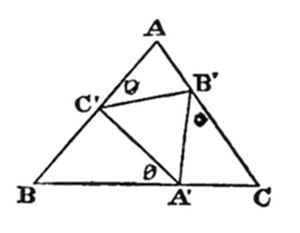
The Triangles can be proved similar like this:
∠ C′A′B′ + ∠ B′A′C = supp. of θ, ∠ B′A′C + ∠ A′CB′ = supp. of θ; ∴ these pairs are equal; ∴ ∠ C′A′B′ = C.
Hence ∠ A′B′C′ = A, and ∠ B′C′A′ = B.
Let C′A′ = ka; ∴ A′B′ = kb, and B′C′ = kc. We have to find k.
[31/3/82]
Given the semi-perimeter and the area of a Triangle, and also the volume of the cuboid whose edges are equal to the sides of the Triangle, find the sum of the squares of its sides.
[23/1/91]
Given the lengths of the radii of two intersecting Circles, and the distance between their centres, find the area of the Tetragon formed by the tangents at the points of intersection.
[3/89]
Prove that 3 times the sum of 3 squares is also the sum of 4 squares.
[2/12/81]
If a Figure is such that the opposite angles of every inscribed Tetragon are supplementary, the Figure is a Circle.
[3/91]
There are two bags. One contains a counter, known to be either white or black; the other contains 1 white and 2 black. A white is put into the first, the bag shaken, and a counter drawn out, which proves to be white. Which course now gives the better chance of drawing a white — to draw from one of the two bags without knowing which it is, or to empty one bag into the other and then draw?
[10/87]
In a given Triangle, place a line parallel to the base such that if lines are drawn from its ends, parallel to the sides and stopping at the base, they are together equal to the first line.
[3/89]
Find a Point in the base of a given Triangle such that if perpendiculars are dropped from it onto the sides, the line joining their far ends is parallel to the base. (1) Trigonometrically. (2) Geometrically.
[11/89]
There are 3 bags: one containing a white counter and a black one, another two white and a black, and the third 3 white and a black. It is not known in what order the bags are placed. A white counter is drawn from one of them, and a black from another. What is the chance of drawing a white counter from the remaining bag?
In the base of a given Triangle, find a Point such that if two lines are drawn from it, stopping at the sides, one perpendicular to the base and one to the left-hand side, they are equal.
[5/88]
1·3·5 + 2·4·6 + etc.
(1) to n terms, (2) to 100 terms.
[7/4/89]
Given the 3 altitudes of a Triangle, find its (1) sides, (2) angles, (3) area.
[4/6/89]
A bag contains 2 counters, each of which is known to be black or white. 2 white and a black are put in, and 2 white and a black drawn out. Then a white is put in, and a white drawn out. What is the chance that it now contains 2 white?
[25/9/87]
If the lines AD, BE, CF are drawn from the vertices of a triangle ABC, intersecting at O, find the ratio DO/DA in terms of the two ratios EO/EB and FO/FC.
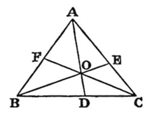
[5/86]
Let ε, α and λ stand for proper fractions; and suppose that in a certain hospital ε of the patients have lost an eye, α an arm, and λ a leg. What is the least possible number who have lost all three?
[7/2/76]
Within a given Triangle, place a similar Triangle whose area has a given ratio to its area, less than 1; whose sides are parallel to its sides; and whose vertices are all the same distance from its vertices.
[4/89]
There are 3 bags, each containing 6 counters. One contains 5 white and one black; another 4 white and 2 black; the third 3 white and 3 black. From two of the bags — it is not known which — 2 counters are drawn, and prove to be black and white. What is the chance of drawing a white counter from the remaining bag?
[4/3/80]
If the sides of a given Triangle, taken in order round it, are divided in extreme and mean ratio, and the Points joined, find the ratio the area of the Triangle so formed bears to the area of the given Triangle.
[12/78]
Prove that the sum of 2 different squares, multiplied by the sum of 2 different squares, gives the sum of 2 squares in 2 different ways.
[3/12/81]
In a given Triangle, to place a line parallel to the base such that if lines are drawn from its ends to the base, parallel to the sides, they are together double the inscribed line.
[15/3/89]
On July 1, at 8 a.m. by my watch, it was 8h. 4m. by my clock. I took the watch to Greenwich, and when it said "noon" the true time was 12h. 5m. That evening, when the watch said 6h., the clock said 5h. 59m.
On July 30, at 9 a.m. by my watch, it was 8h. 57m. by my clock. At Greenwich, when the watch said 12h. 10m., the true time was 12h. 5m. That evening, when the watch said 7h., the clock said 6h. 58m.
My watch is only wound up for each journey, and goes uniformly through any one day; the clock is always going, and goes uniformly.
How am I to know when it is true noon on July 31?
[14/3/89]
Sum the series 1·5 + 2·6 + etc., (1) to n terms, (2) to 100 terms.
[7/4/89]
Inscribe in a given Circle the largest Tetragon having 2 parallel sides, one double the other.
From a given Point, draw 2 Lines: one to the centre of a given Circle, and the other cutting off from it a Segment containing an angle equal to the angle between the Lines.
[21/12/74]
With a given Triangle, describe a Circle cutting each side in two points, such that if radii are drawn perpendicular to the sides, they are divided by the sides in given ratios.
[11/76]
In a given Triangle, draw a line from a Point on one side to a Point on the other, perpendicular to one of those sides, and equal to the sum of the portions of those sides intercepted between it and the base.
[3/89]
Two given Circles intersect, so that their common chord subtends angles of 30° and 60° at their centres. What fraction of the smaller Circle lies within the larger?
[12/91]
There are 3 bags, A, B and C. A contains 3 red counters; B, 2 red and one white; C, one red and 2 white. Two bags are taken at random and a counter drawn from each: both prove to be red. The counters are replaced and the experiment repeated with the same two bags: one proves to be red. What is the chance of the other being red?
[3/76]
A and B begin, at 6 a.m. on the same day, to walk along a road in the same direction, B having a start of 14 miles, and each walking from 6 a.m. to 6 p.m. daily. A walks 10 miles at a uniform pace the first day, 9 the second, 8 the third, and so on; B walks 2 miles at a uniform pace the first day, 4 the second, 6 the third, and so on. When and where are they together?
[16/3/78]
In a given Triangle whose base-angles are acute, draw two lines at right angles to the base, together equal to the line drawn from the vertex at right angles to the base, and such that
(1) they are equidistant from the line drawn from the vertex;
(2) they are equidistant from the ends of the base.
[5/76]
My friend brings me a bag containing four counters, each of which is either black or white. He tells me to draw two, and both prove to be white. He then says "I meant to tell you, before you began, that there was at least one white counter in the bag. However, you know it now, without my telling you. Draw again."
(1) What is now my chance of drawing white?
(2) What would it have been if he had not spoken?
[9/87]
If the angles of a given Triangle are bisected, and lines are drawn through its vertices at right angles to the bisectors, so as to form a fresh Triangle, find the ratio of the area of this Triangle to the area of the given Triangle.
[17/5/78]
From the ends of the base of a given Triangle, draw two lines that intersect, stop at the sides, and form an isosceles Triangle at the base and a Tetragon, equal to it, at the vertex.
[2/82]
If a and b are two numbers prime to each other, a value can be found for n which will make (an − 1) a multiple of b.
[18/3/81]
If an infinite number of rods are broken, find the chance that at least one is broken in the middle.
[5/84]
In a given Triangle whose base is divided at a given Point, inscribe a Triangle having its angles equal to given angles, and having an assigned vertex at the given Point.
[19/11/87]
x/y = x − z; x/z = x − y; } (1) (2)
and find the limits, if any, between which the real values lie.
[12/90]
If semicircles are described on the outside of the sides of a given Triangle, and their common tangents drawn, and the lengths of those tangents are α, β, γ, prove that
(βγ/α + γα/β + αβ/γ)
is equal to the semiperimeter of the Triangle.
[9/2/81]
If four equilateral Triangles are made the sides of a square Pyramid, find the ratio its volume bears to that of a Tetrahedron made of the same Triangles.
[16/11/86]
There are 2 bags, H and K, each containing 2 counters, and it is known that each counter is either black or white. A white counter is added to bag H, the bag is shaken up, and one counter transferred, without being looked at, to bag K, where the process is repeated, a counter being transferred back to bag H. What is now the chance of drawing a white counter from bag H?
From a given Point in one side of a given Triangle, draw a line stopping at the other side, so that if lines are drawn from its ends at right angles to the base, their sum is equal to the first line.
[12/81]
Five beggars sat down in a circle, and each piled up in front of him the pennies he had been given that day; and the five heaps were equal.
Then spoke the eldest and wisest of them, unfolding as he spoke an empty sack.
"My friends, let me teach you a pretty little game! First, I name myself Number One, my left-hand neighbour Number Two, and so on to Number Five. I then pour into this sack the whole of my earnings for the day, and hand it on to the man sitting next but one on my left — that is, Number Three. His part in the game is to take out of it, and give to his two neighbours, as many pennies as their names come to (so he must give four to Number Four and two to Number Two); he must then put into the sack half as much as it held when he received it; and he must then hand it on just as I did, to the man sitting next but one on his left — who will of course be Number Five. He must go on in the same way, and hand it to Number Two, from whom the sack will find its way to Number Four, and so back to me. If any player cannot furnish out of his own heap the whole of what he has to put into the sack, he is at liberty to draw on any of the other heaps — except mine!"
The other beggars entered into the game with much enthusiasm; and in due time the sack came back to Number One, who put into it the two pennies he had received during the game, and carefully tied up its mouth with a string. Then, remarking "it is a very pretty little game," he rose to his feet and hastily left the spot. The other four beggars gazed at each other with rueful faces. Not one of them had a penny left.
How much had each at first?
[16/2/89]
On a triangular billiard-table, a Point is given by its trilinear coordinates. A ball starting from that Point strikes the three sides and returns to its starting-point. Find, in terms of the trilinear coordinates and of the angles of the Triangle, the Point where the ball strikes the second side.
[6/4/89]
Cut off from a given Triangle, by lines parallel to the sides, 3 Triangles, so that the remaining Hexagon is equilateral. Also find the lengths of its sides in terms of the sides of the given Triangle, and the ratios in which the sides of the given Triangle are divided.
[18/4/86]
Given three cylindrical towers on a Plane, find a Point on the Plane from which they all look the same width.
[20/12/74]
Given the 3 altitudes of a Triangle, construct it.
[27/6/84]
In a given Triangle, describe three Squares whose bases lie along the sides of the Triangle and whose upper edges form a Triangle;
(1) geometrically; (2) trigonometrically.
[27/1/91]
Three Points are taken at random on an infinite Plane. Find the chance of their being the vertices of an obtuse-angled Triangle.
[20/1/84]
Given a Tetrahedron having every edge equal to the opposite edge, so that its faces are all identically equal when looked at from the outside, find its volume in terms of its edges.
[8/90]
Given a Triangle ABC whose base BC is divided at D in the ratio m to n, find the angles BAD and CAD.
[21/3/90]
Prove that if any 3 Numbers are taken which cannot be arranged in A.P., and whose sum is a multiple of 3, the sum of their squares is also the sum of another set of 3 squares, the 2 sets having no common term.
[1/12/81]
Given two Lines meeting at a Point, and a Point lying inside the angle between them, draw a line through the given Point forming the smallest possible Triangle with the given Lines.
[12/76]
Given 2 equal Squares in different horizontal planes, with their centres in the same vertical line, so placed that the sides of each are parallel to the diagonals of the other, and so far apart that joining neighbouring vertices forms 8 equilateral Triangles, find the volume of the solid so enclosed.
[3, 4/9/90]
Given a Triangle, and a Point inside it whose distance from one of the sides is less than its distance from either of the others, describe a Circle with the given Point as centre such that the lengths it cuts off on the sides are equal to the sides of a right-angled Triangle.
[18/12/74]
How many shapes are there for Triangles all of whose angles divide 360° exactly?
[5/89]
There are 2 counters in a bag, and all that was originally known of them was that each was either white or black. The experiment has been tried a certain number of times of drawing a counter, looking at it, and putting it back; it has been white every time; and as a result the chance of drawing white next time is α/(α + β). Now suppose the same experiment is repeated m times more, and it still comes out white every time. What would the chance of drawing white be then?
[9/89]
A regular Tetrahedron is placed with one vertex downwards in a socket that exactly fits it, and is turned round its vertical axis through an angle of 120°, being raised only as much as is necessary, until it fits the socket again. Find the path traced by one of the turning vertices.
[27/1/72]
Five friends agreed to form themselves into a Wine Company (Limited). They contributed equal amounts of wine, which had been bought at the same price. They then elected one of themselves to act as Treasurer, and another undertook to act as Salesman and to sell the wine at 10% over cost price.
The first day the Salesman drank one bottle, sold some, and handed the takings over to the Treasurer.
The second day he drank none, but pocketed the profit on one bottle sold, and handed the rest of the takings over to the Treasurer.
That night the Treasurer visited the cellars and counted the remaining wine. "It will fetch just £11," he muttered to himself as he left.
The third day the Salesman drank one bottle, pocketed the profit on another, and handed the rest of the takings over to the Treasurer.
The wine was now all gone. The Company held a meeting, and found to their chagrin that their profits — that is, the Treasurer's takings, less the original value of the wine — cleared only sixpence a bottle on the whole stock. Those profits had come in three equal sums on the three days (that is, the Treasurer's takings for the day, less the original value of the wine taken out during the day, came to the same amount every time); but of course only the Salesman knew that.
(1) How much wine had they bought? (2) At what price?
[28/2/89]
From each of the angles of a given Triangle ABC, taken in order round it, a certain proper fraction of the angle is cut off, the arithmetical values of the 3 fractions being k, l and m. Given that the Triangle formed by the lines so drawn is similar to the given one — the angle formed by the lines drawn from B and C being equal to A, and so on — find k, l and m as similar functions of a single variable. Also find the ratio each side of the second Triangle bears to the corresponding side of the first.
[8/89]
Let an equilateral and equiangular Tetrahedron be placed with one face to the front; and suppose a series of triangles equal to that face are constructed in the Plane containing it, sharing a base with it, and are then all wrapped round the Tetrahedron as far as they will go. Find (1) the path traced by their vertices; (2) the position of the vertex of the one whose left-hand base-angle is 15°; (3) the left-hand base-angle of the one which, wrapped round towards the right, covers parts of all four faces of the Tetrahedron and whose vertex coincides with its vertex; (4) the left-hand base-angle of the one which, treated the same way, covers all four faces and then the front and right-hand face a second time, and whose vertex coincides with the far vertex of the base of the Tetrahedron.
In a given Triangle, place a Hexagon having its opposite sides equal and parallel, three of them lying along the sides of the Triangle, and its diagonals intersecting at a given Point.
[14/12/74]
A bag contains 2 counters, of which nothing is known except that each is either black or white. Find out their colours without taking them out of the bag.
[8/9/87]
Two-thirds.
Calling the sides '2a', '2b', '2c' and the lines 'α', 'β', 'γ', we have
a2 = (-α2 + 2β2 + 2γ2)/9,
cos A = (5α2 - β2 - γ2)/(2√(2α2 - β2 + 2γ2)·√(2α2 + 2β2 - γ2)).
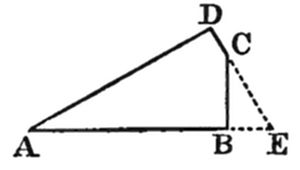
Let AB, AD be given sides, and B, D the right ∠s; and let AB = b, AD = d.
(1) BC = (d - b cos A)/(sin A); CD = (b - d cos A)/(sin A);
(2) area = (2bd - (b2 + d2) cos A)/(2 sin A).
7 men; 2 shillings.
Either 2 florins and a sixpence; or else a half-crown and 2 shillings.
The required ratio is equal to
(sin A sin B sin C)/(sin θ (1 + cos A cos B cos C) + cos θ sin A sin B sin C).
If θ = 90°, this = (sin A sin B sin C)/(1 + cos A cos B cos C).
If s = semi-perimeter, m = area, v = volume; then
a2 + b2 + c2 = 2·(s2 - v/s - m2/s2).
If '2M' = area of Tetragon whose vertices are the Centres and the Points of intersection; and if its sides is 'a', 'b', and its diagonal, joining the Centres, 'c': required area
= 32M3/((b2 + c2 - a2)·(c2 + a2 - b2)).
The first course gives chance = 1/2; the second, 5/12. Hence the first is best.
(1) Divide base BC, at E, so that BE/EC = (sin 2C)/(sin 2B).
(2) At B, C, make right angles ABD, ACD; and join AD cutting BC at E, which is the required Point.
Eleven-seventeenths.
(1) (n·(n + 1)·(n + 4)·(n + 5))/4; (2) 27,573,000.
Calling the given altitudes 'α, β, γ'; and the fraction
(2α2 β2 γ2·(α2 + β2 + γ2) - (β4 γ4 + γ4 α4 + α4 β4))/(4α4 β4 γ4) k2,
(1) a = 1/kα, etc.
(2) sin A = kβ γ, etc.
(3) area = 1/2k.
Two-fifths.
DO/DA + EO/EB + FO/FC = 1; from which any one can be found in terms of the other two.
ε + α + λ - 2.
Seventeen-twentyfifths.
7 - 3√5.
When the clock says '12h. 2m. 29 277/288 sec.'
(1) (n·(n + 1)·(2n + 13))/6; (2) 358550.
(4 + √3)/12 - (1 + √3)/2π; i.e. about 0.044
.
Fortynine-seventytwoths.
They meet at end of 2d. 6h., and at end of 4d.: and the distances are 23 miles, and 34 miles.
(1) Seven-twelfths. (2) One-half.
abc/(2(s - a)·(s - b)·(s - c)).
0.6321207 etc.
One set of values is 0, 0, 0.
A 2nd set is x = y = 0; z has any value.
A 3rd is x = z = 0; y has any value.
And the 4th set is x = k2/(k - 1), y = z = k; where k has any value.
If x has any positive value less than 4, y and z are unreal.
Two.
Seventeen-twentysevenths.
2l. 18s. 0d.
The portion, cut off from the second side, is equal to
((α sin C + γ sin A)(2γ cos A + β))/(α cos C + γ cos A + β) + (β cos A + γ cos 2A)/(sin A).
Side AB must be divided at D, G, so that
AD: DG: GB:: 1/a: 1/c: 1/b;
and similarly for the other sides. Also each side of the Hexagon = 1/(1/a + 1/b + 1/c).
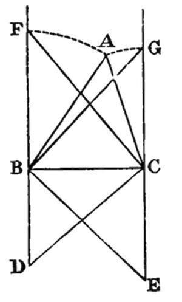
Draw BC, CE, BD equal to the given altitudes, so as to form right ∠s at B and C: and produce DB, EC. Join DC, and draw CF ⊥ to it. Join EB, and draw BG ⊥ to it. With centre B, and distance BF, describe a circle: with centre C, and distance CG describe another: let them meet at A: and join AB, AC. Triangle ABC may be proved to be similar to required Triangle. The rest of the construction is obvious.
(1) Geometrically.
If Squares is described externally on the sides of the given Triangle; and if their outer edges is produced to form a new Triangle; and if the sides of the given Triangle is divided similarly to those of the new Triangle: their central portions will be the bases of the required Squares.
(2) Trigonometrically.
If a, b, c be the sides of the given Triangle, and m its area; and if x, y, z be the sides of the required Squares: then
a/x = b/y = c/z = (a2 + b2 + c2)/2m + 1.
3/(8 - 6√3/π).
Calling lengths of the 3 pairs of edges 'a, b, c', and the corresponding ∠s, in each facet, 'A, B, C'; volume =
abc/6·√(1 - (cos2A + cos2B + cos2C) + 2 cos A cos B cos C.)
cot BAD = ((m + n) cot A + n cot B)/m;
similarly, cot CAD = ((m + n) cot A + m cot C)/n.
If each side of each Square = 2, the volume =
(8·2^(1/4)·(√2 + 1))/3.
(2^m·(α - β) + β)/(2^m·(α - β) + 2β).
If the centre of the horizontal facet is taken as the Origin, and if the X-axis pass through one of the vertices of that facet, and the Y-axis be parallel to the opposite edge of that facet, and the Z-axis be perpendicular to that facet: and if the altitude (measured downwards) of the Tetrahedron be called 'h', and the intercept on the X-axis be called 'a': the Equations to the Locus are
(x + √3·y)·(h - z) = ah; x2 + y2 = a2.
(1) 5 dozen; (2) 8/4 a bottle.
(1) k = (θ - B)/A; l = (θ - C)/B; m = (θ - A)/C.
(2) Calling new Triangle 'A'B'C'',
a'/a = b'/b = c'/c = 2 cos θ.
(1) Down the back-edge; up again; and so on. (2) about 0.7 of the way down the back-edge. (3) About 18.65°. (4) About 14.53°.
One is black, and the other white.
Let u, v be the Nos.
Then u2 + v2 = 2.
Plainly '(1 + k), (1 - k)' is a form for the squares.
Also, if we write '2m2' for '2' (which will not interfere with the problem, as we can divide by m2, and get u2/m2 + v2/m2 = 2), the above form becomes '(m2 + k), (m2 - k)'.
Now, as these are squares, their resemblance to
(a2 + b2 + 2ab), (a2 + b2 - 2ab)
at once suggests itself; so that the problem depends on the known one of finding a, b, such that (a2 + b2) is a square; and we can then take 2ab as k.
A general form for this is
a = x2 - y2, b = 2xy; ∴ a2 + b2 = (x2 + y2)2; ∴ the formula u2 + v2 = 2 m2 becomes (x2 - y2 + 2xy)2 + (x2 - y2 - 2xy)2 = 2(x2 + y2)2; i.e. ((x2 - y2 + 2xy)/(x2 + y2))2 + ((x2 - y2 - 2xy)/(x2 + y2))2 = 2.
Q.E.F.
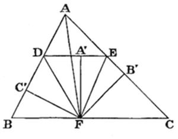
(Analysis.)
Let ABC be the Triangle, and DE the required line, so that BD + CE = BC.
From BC cut off BF equal to BD; then CF = CE.
Join DF, EF.
Now ∠ BDF = ∠ BFD = [by I. 29] ∠ FDE;
Similarly ∠ CEF = ∠ FED;
∴ ∠ s BDE, CED, are bisected by DF, EF, and F is centre of circle escribed to △ ADE.
Drop, from F, ⊥s on BD, DE, EC; then these ⊥s are equal.
Hence, if AF is joined, it bisects ∠ A.
Hence construction.
(Synthesis.)
Bisect ∠ A by AF: from F draw FB', FC', ⊥ AC, AB: also draw FA' ⊥ BC and equal to FB': and through A' draw DE ⊥ FA', i.e. parallel to BC. Then DE is line required.
∵ ∠s at A', B', C', are right, and FA' = FB' = FC',
∴ ∠s BDE, CED, are bisected by DF, EF.
Now ∠ BFD = ∠ FDA'; ∴ it = ∠ BDF; ∴ BF = BD;
Similarly CF = CE; ∴ BC = BD + CE.
Q.E.F.
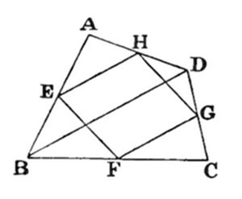
Let ABCD be the Tetragon; and let the 3 sides, AB, BC, CD, be bisected by vertices of the Parallelogram EFGH.
Join BD.
∵, in Triangle BCD, sides BC, CD are bisected at F and G,
∴ FG is parallel to BD;
but EH is parallel to FG;
∴ EH is parallel to BD;
∴ Triangles AEH, ABD are similar;
now AE is half of AB;
∴ AH is half of AD.
Q. E. D.
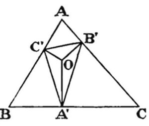
Let ABC be the given Triangle, and A'B'C' the required Triangle, so that ∠ BA'C' = ∠ CA'B', &c.
Plainly A'C', A'B' are equally inclined to a line drawn, from A', ⊥ BC; and so of the others: i.e. these ⊥s bisect the ∠s at A', B', C';
∴ they meet in the same Point. Draw them; let them meet at O; and call the ∠ C'A'B' '2α', and so on.
Now (β + γ) = π - ∠ B'OC' = A;
∴ 2A = 2(β + γ) = π - 2α;
∴ α = 90°-A;
∴ ∠ BA'C' = A.
Similarly, ∠ BC'A' = C.
∴ Triangle BC'A' is similar to Triangle BCA; and so of the others;
∴ BA' = c/a · BC' = c/a · (c - AC'), = c/a · (c - b/c · AB'), = c2/a - b/a · (b - CB'), = c2/a - b2/a + b/a · a/b · CA', = c2/a - b2/a + a - BA'; ∴ 2BA' = (c2 + a2 - b2)/a = (2ca cos B)/a; ∴ BA' = c cos B;
∴ A' is foot of ⊥ drawn, from A, to BC. Hence the construction is obvious.
Q.E.F.
At first sight, it would appear that, as the state of the bag, after the operation, is necessarily identical with its state before it, the chance is just what it then was, namely 1/2. This, however, is an error.
The chances, before the addition, that the bag contains (a) 1 white (b) 1 black, are (a) 1/2 (b) 1/2. Hence the chances, after the addition, that it contains (a) 2 white (b) 1 white, 1 black, are the same, namely (a) 1/2 (b) 1/2. Now the probabilities, which these 2 states give to the observed event, of drawing a white counter, are (a) certainty (b) 1/2. Hence the chances, after drawing the white counter, that the bag, before drawing, contained (a) 2 white, (b) 1 white, 1 black, are proportional to (a) 1/2.1 (b) 1/2 · 1/2; i.e. (a) 1/2 (b) 1/4; i. e. (a) 2 (b) 1. Hence the chances are (a) 2/3 (b) 1/3. Hence, after the removal of a white counter, the chances, that the bag now contains (a) 1 white (b) 1 black, are for (a) 2/3 and for (b) 1/3.
Thus the chance, of now drawing a white counter, is 2/3.
Q.E.F.
Call sides '2a, 2b, 2c', and lines in question 'α, β, γ'.
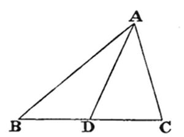
Now cos ADB + cos ADC = 0;
∴ (α2 + a2 - 4c2)/(2α a) + (α2 + a2 - 4b2)/(2α a) = 0; ∴ 2α2 + 2a2 - 4b2 - 4c2 = 0; ∴ α2 = -a2 + 2b2 + 2c2. Similarly, β2 = 2a2 - b2 + 2c2; γ2 = 2a2 + 2b2 - c2.
To eliminate b, c, let us multiply by k, l, m, so taken that
2k - l + 2m = 0, and 2k + 2l - m = 0; ∴ 3(l - m) = 0; i.e. l = m; ∴ 2k = -l = -m;
hence we may make k = -1, l = 2, m = 2;
∴ - α2 + 2β2 + 2γ2 = 9a2; i.e. a2 = (- α2 + 2β2 + 2γ2)/9; ∴ BC (which = 2a) = 2/3√(- α2 + 2β2 + 2γ2), etc.,
which gives lengths of sides.
Also cos A = (b2 + c2 - a2)/2bc = (2α2 - β2 + 2γ2 + 2α2 + 2β2 - γ2 + α2 - 2β2 - 2γ2)/(2·√(2α2 - β2 + 2γ2)·√(2α2 + 2β2 - γ2)) = (5α2 - β2 - γ2)/den.; and so for other angles.
Q.E.F.
Let AB, AD be given sides, and B, D the right ∠s; and let AB = b, AD = d.
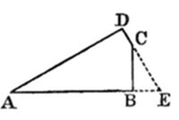
Produce DC to meet AB-produced at E.
Now AE = AD·sec A = d sec A; ∴ BE = d sec A - b. Also BC = BE·tan E = (d sec A - b)·cot A, = (d - b cos A)/(sin A);
similarly, CD = (b - d cos A)/(sin A); which answers (1).
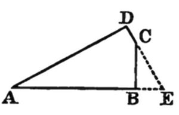
Also area = 1/2 · (AB·BC + AD·DC), = 1/2 · (b·(d - b cos A) + d·(b - d cos A))/(sin A), = (2bd - (b2 + d2) cos A)/(2 sin A); which answers (2).
Q.E.F.
Let m = No. of men, k = No. of shillings possessed by the last (i.e. the poorest) man. After one circuit, each is a shilling poorer, and the moving heap contains m shillings. Hence, after k circuits, each is k shillings poorer, the last man now having nothing, and the moving heap contains mk shillings. Hence the thing ends when the last man is again called on to hand on the heap, which then contains (mk + m - 1) shillings, the penultimate man now having nothing, and the first man having (m - 2) shillings.
Plainly the first and last man are the only 2 neighbours whose possessions can be in the ratio '4 to 1'. Hence either
mk + m - 1 = 4(m - 2), or else 4(mk + m - 1) = m - 2.
The first equation gives mk = 3m - 7, i.e. k = 3 - 7/m, which plainly gives no integral values other than m = 7, k = 2.
The second gives 4mk = 2 - 3m, which plainly gives no positive integral values.
Hence the answer is '7 men; 2 shillings'.
Let AB, AC, be the given Lines, and P the given Point; and join AP.
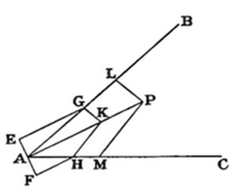
Through A draw EAF, ⊥ AP, and bisected at A; from E, F, draw EG, FH, parallel to AP, and meeting AB, AC, at G, H; join GH, and on it describe a semicircle cutting AP at K; and join KG, KH. Then ∠ GKH is a right angle. From P draw PL, PM, parallel to KG, KH.
Now Triangle APL has, to Triangle AKG, the duplicate ratio of AP to AK;
but so also has triangle APM to Triangle AKH;
also Triangles AKG, AKH, are equal, being on the same base AK, and having equal altitudes AE, AF;
∴ Triangles APL, APM are equal: and ∠ LPM is plainly equal to ∠ GKH; ∴ it is a right angle.
Q.E.F.
Call them x, y, z; and let x + y + z = s.
The chance, that the pocket contains 2 balls, is 2/3; and, if it does, the 'expectation' is the average value of
(y + z), (z + x), (x + y); i.e. it is 2s/3.
Also the chance, that it contains only one, is 1/3; and, if it does, the 'expectation' is s/3.
Hence total 'expectation' = 4s/9 + s/9 = 5s/9.
∴ 5s/9 = 30d.; ∴ s = 54d. = 4/6.
Hence the coins must be 2 florins and a sixpence; or else a half-crown and 2 shillings.
Q.E.F.
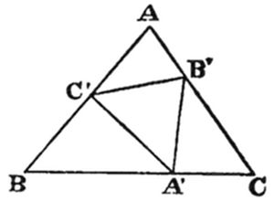
Now BA'/A'C' = (sin (B + θ))/(sin B); and A'C/A'B' = (sin θ)/(sin C).
∴ BA = (sin (B + θ))/(sin B)·ka; and A'C = (sin θ)/(sin C)·kb
but BA' + A'C = a; ∴ k
= a/((a·sin (B + θ))/(sin B) + (b sin θ)/(sin C)) = (sin A)/((sin A sin (B + θ))/(sin B) + (sin B sin θ)/(sin C))
= (sin A sin B sin C)/(sin A sin (B + θ) sin C + sin2 B sin θ) = (sin A sin B sin C)/(sin A sin C(sin B cos θ + cos B sin θ) + (1 - cos2 B) sin θ) = (sin A sin B sin C)/(sin θ + sin θ(sin A sin C cos B - cos2B) + cos θ sin A sin B sin C) = (sin A sin B sin C)/(sin θ + sin θ cos B(sin A sin C + cos (A + C)) + cos θ sin A sin B sin C) = (sin A sin B sin C)/(sin θ(1 + cos A cos B cos C) + cos θ sin A sin B sin C).
Q.E.F.
Cor. Let θ = 90°; then k = (sin A sin B sin C)/(1 + cos A cos B cos C).
Let s = semi-perimeter, m = area, v = volume.
We know that m = √(s·(s - a)·(s - b)·(s - c));
∴ m2 = s·(s - a)·(s - b)·(s - c); ∴ m2/s = s3 - s2·(a + b + c) + s·(bc + ca + ab) - abc; = s3 - 2s3 + s·(bc + ca + ab) - v; ∴ m2/s2 + v/s + s2 = bc + ca + ab; ∴ 2·(m2/s2 + v/s + s2) = (a + b + c)2 - (a2 + b2 + c2); = 4s2 - (a2 + b2 + c2); ∴ a2 + b2 + c2 = 2·(s2 - v/s - m2/s2).
Q.E.F.
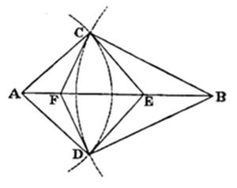
Let A, B, be the centres of the Circles; C, D, their points of intersection; and CFDE the Tetragon whose area is required.
Let the sides of the Triangle ABC be a, b, c; and its ∠s α, β, γ.
Then CE = b·tan α, and CF = a·tan β.
Also ∠ FCE = ∠ ACE + ∠ FCB - γ = π - γ;
∴ sin FCE = sin γ.
Hence area of Triangle FCE = 1/2·ab·tan α·tan β·sin γ;
∴ area of Tetragon = (ab sin α sin β sin γ)/(cos α cos β).
Now, writing 'M' for area of Triangle ABC, we have
sin α = 2M/bc, sin β = 2M/ca, sin γ = 2M/ab;
∴ area of Tetragon = ab · 8M3/(a2 b2 c2) · (4bc·ca)/((b2 + c2 - a2)(c2 + a2 - b2)); = 32M3/((b2 + c2 - a2)·(c2 + a2 - b2)).
Q.E.F.
This simply expresses the identity
3(a2 + b2 + c2) = (a + b + c)2 + (b2 - 2bc + c2) + (c2 - 2ca + a2) + (a2 - 2ab + b2); = (a + b + c)2 + (b - c)2 + (c - a)2 + (a - b)2.
Q. E. D.
Numerical Examples (not thought out).
3(12 + 22 + 32) = 62 + 12 + 22 + 12. 3(12 + 32 + 72) = 112 + 42 + 62 + 22.
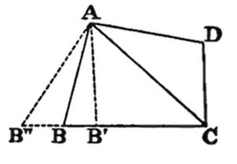
Let ABCD be an inscribed Tetragon. Join AC: and about Triangle ACD describe a Circle.
Now, if this Circle does not pass through B, let it cut CB, or CB produced, in B′ or B″. Join AB′, AB″.
Then ∠ AB′C, or ∠ AB″C, is supplementary to ∠ ADC;
∴ it = ∠ ABC; which is absurd;
∴ this Circle does pass through B.
The same thing may be proved for any other Point on that portion, of the perimeter of the given Figure, which lies on the same side of AC as the Point D.
Similarly for the other portion.
Hence the Figure is a Circle.
Q. E. D.
The 'a priori' chances of possible states of first bag are 'W, 1/2; B, 1/2'. Hence chances, after putting W in, are 'WW, 1/2; WB, 1/2'. The chances, which these give to the 'observed event', are 1, 1/2. Hence chances of possible states 'W, B', after the event, are proportional to 1, 1/2; i.e. to 2, 1; i.e. their actual values are 2/3, 1/3.
Now, in first course, chance of drawing W is 1/2 · 2/3 + 1/2 · 1/3; i.e. 1/2.
And, in second course, chances of possible states 'WWBB, WBBB' are 2/3, 1/3: hence chance of drawing W is 2/3 · 1/2 + 1/3 · 1/4; i.e. 5/12.
Hence first course gives best chance.
Q.E.F.
(Analysis.)
Let ABC be the given Triangle, and DE the line required.
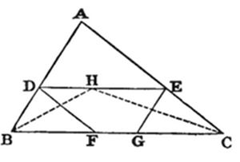
From D, E, draw DF, EG, parallel to the sides. Then DF + EG = DE.
Because BE is a Parallelogram, ∴ DB = EG;
similarly EC = DF;
∴ DB + EC = DE.
Hence construction.
(Synthesis.)
Bisect ∠s B, C, by BH, CH, meeting at H; through H draw DE parallel to BC; and from D, E, draw DF, EG, parallel to AC, AB.
Because DE is parallel to BC,
∴ ∠ DHB = alternate ∠ HBF = ∠ DBH;
∴ DB = DH.
Similarly EC = EH.
∴ DB + EC = DE.
Because BE, DC are Parallelograms,
∴ EG = DB, and DF = EC;
∴ DF + EG = DE.
Q.E.F.
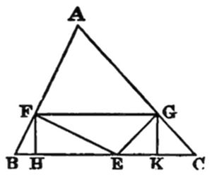
(1) Call required Point E. From E draw EF, FG ⊥ sides. Join FG. From F, G, draw FH, GK ⊥ BC. Call BE 'x', and EC 'y'.
Now FH must = GK. Also EF = x sin B; and FH = EF sin FEH, = EF cos B, = x sin B cos B; similarly, GK = y sin C cos C.
But FH = GK; ∴ x sin B cos B = y sin C cos C; ∴ x/y = (sin 2C)/(sin 2B).
Q.E.F.
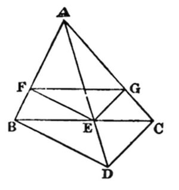
(2) At B, C, make right angles ABD, ACD; and join AD, cutting BC at E. From E draw EF, EG ⊥ sides; and join FG.
∵ BD, FE are ⊥ AB, ∴ they are parallel; ∴ AF: FB:: AE: ED;
∵ CD, GE are ⊥ AC, ∴ they are parallel; ∴ AG: GC:: AE: ED;
∴ AF: FB:: AG: GC;
∴ FG is parallel to BC.
Q.E.F.
Call the bags A, B, C; so that A contains a white counter and a black one; &c.
The chances of the orders ABC, ACB, BAC, BCA, CAB, CBA, are, a priori, 1/6 each. Since they are equal, we may, instead of multiplying each by the probability it gives to the observed event, simply assume those probabilities as being proportional to the chances after the observed event.
These probabilities are:—
for ABC, 1/2 × 1/3; i.e. 1/6. ACB, 1/2 × 1/4; i.e. 1/8. BAC, 2/3 × 1/2; i.e. 1/3. BCA, 2/3 × 1/4; i.e. 1/6. CAB, 3/4 × 1/2; i.e. 3/8. CBA, 3/4 × 1/3; i.e. 1/4.
Hence the chances are proportional to 4, 3, 8, 4, 9, 6; i.e. they are these Nos. divided by 34.
Hence the chance, of drawing a white counter from the remaining bag; is
1/34 · {4 × 3/4 + 3 × 2/3 + 8 × 3/4 + 4 × 1/2 + 9 × 2/3 + 6 × 1/2};
i.e. 1/34 × {3 + 2 + 6 + 2 + 6 + 3}; i.e. 22/34; i.e. 11/17.
(Analysis.)
Let ABC be the given Triangle, and P the required Point. Draw PQ⊥ BC, and PR⊥ AB. Then PQ = PR.
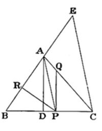
Hence PC tan C = PB sin B;
:: AD/AB: AD/DC, :: DC:AB.
Hence construction.
(Synthesis.)
From A draw AD⊥ BC. Produce BA to E, making AE equal to DC. Join EC. From A draw AP parallel to EC; and from P draw PQ⊥ BC, and PR⊥ AB.
Then PQ/PC = AD/DC = AD/AB · AB/DC, = PR/PB · AB/AE, = PR/PB · PB/PC = PR/PC; ∴ PQ = PR.
Q.E.F.
(1) The nth term is n·(n + 2)·(n + 4);
∴ the (n + 1)th term is (n + 1)·(n + 3)·(n + 5);
= (n + 1)·((n + 2) + 1)·(n + 5);
= (n + 1)·(n + 2)·(n + 5) + (n + 1)·(n + 5)
= (n + 1)·(n + 2)·((n + 3) + 2) + (n + 1)·((n + 2) + 3);
= (n + 1)·(n + 2)·(n + 3) + 2·(n + 1)·(n + 2) + (n + 1)·(n + 2) + 3·(n + 1);
= (n + 1)·(n + 2)·(n + 3) + 3·(n + 1)·(n + 2) + 3·(n + 1).
∴ S = (n·(n + 1)·(n + 2)·(n + 3))/4 + n·(n + 1)·(n + 2) + 3/2·n·(n + 1) + C;
and C = 0.
∴ S = n·(n + 1)·((n2 + 5n + 6)/4 + n + 2 + 3/2);
= n·(n + 1)·(n2 + 9n + 20)/4 = (n·(n + 1)·(n + 4)·(n + 5))/4.
Q.E.F.
(2) S, to 100 terms,
= (100·101·104·105)/4 = 100·101·26·105;
now 101·105 = 10,605;
∴ 101·105·13 = 130,000 + 7800 + 65 = 137,865;
and twice this = 274,000 + 1730 = 275,730;
∴ S = 27,573,000.
Q.E.F.
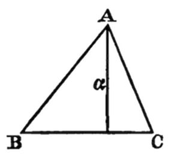
Call given altitudes 'α, β, γ'.
Now aα = bβ = cγ;
∴ α sin A = β sin B = γ sin C;
∴ (sin A)/βγ = (sin B)/γα = (sin C)/αβ = k (say);
∴ sin A = kβγ, sin B = kγα, sin C = kαβ.
Now sin (A + B) = sin C;
∴ sin A cos B + cos A sin B = sin C;
∴ sin A cos B = sin C - cos A sin B;
∴ sin2A (1 - sin2B) = sin2C + sin2B (1 - sin2A) - 2 sin C cos A sin B;
∴ sin2A - sin2A sin2B = sin2C + sin2B - sin2A sin2B - 2 sin B sin C cos A;
∴ sin2A - sin2B - sin2C = -2 sin B sin C cos A;
∴, squaring, (sin4A + etc.) - 2 sin2A sin2B - 2 sin2A sin2C + 2 sin2B sin2C = 4 sin2B sin2C(1 - sin2A);
∴ (sin4A + etc.) - 2(sin2B sin2C + etc.) + 4 sin2A sin2B sin2C = 0;
∴, substituting for sin A, &c., and dividing by k4, (β4γ4 + etc.) - 2α2β2γ2·(α2 + etc.) + 4k2α4β4γ4 = 0;
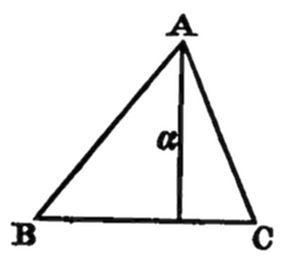
∴ k2 = (2α2β2γ2(α2 + etc.) - (β4γ4 + etc.))/4α4β4γ4.
Now sin A = kβγ, &c.; which answers (2).
Also α = b sin C; and similarly γ = a sin B;
∴ a = γ/(sin B) = γ/kγα = 1/kα, etc.; which answers (1).
Also area = (bc sin A)/2 = 1/2 · 1/kβ · 1/kγ · kβγ = 1/2k;
which answers (3).
Q.E.F.
The original chances, as to states of bag, are
for 2 W 1/4; 1 W, 1 B 1/2; 2 B 1/4.
∴ the chances, after adding 2 W and 1 B, are
for 4 W, 1 B 1/4; 3 W, 2 B 1/2; 2 W, 3 B 1/4.
Now the chances, which these give to the observed event, drawing 2 W and 1 B, are 3/5, 3/5, 3/10.
∴ the chances, after this event, are proportional to 3/20, 3/10, 3/40; i.e. to 2, 4, 1. Hence they are 2/7, 4/7, 1/7.
Hence the chances, as to states, now are
for 2 W 2/7; 1 W, 1 B 4/7; 2 B 1/7.
∴ the chances, after adding 1 W, are
for 3 W 2/7; 2 W, 1 B 4/7; 1 W, 2 B 1/7.
Now the chances, which these give to the observed event, of drawing 1 W, are 1, 2/3, 1/3.
∴ the chances, after this event, are proportional to 2/7, 8/21, 1/21;
i.e. to 6, 8, 1. Hence they are 6/15, 8/15, 1/15.
Hence the chance, that the bag now contains 2 white, is 6/15; i.e. 2/5.
Q.E.F.
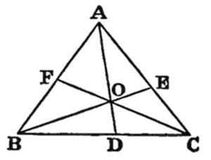
Because DO/OA = (△ DOC)/(△ OAC) = (△ DOB)/(△ OAB) = (△ OBC)/(△ OCA + △ OAB); ∴ DO/DA = (△ OBC)/(△ ABC). Similarly, EO/EB = (△ OCA)/(△ ABC), and FO/FC = (△ OAB)/(△ ABC). Hence DO/DA + EO/EB + FO/FC = 1.
Q.E.F.
Let 'E' mean 'having lost an eye', 'A' 'having lost an arm', and 'L' 'having lost a leg'.
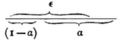
Then the state of things which gives the least possible number of those who, being E and A, are also L, may plainly be found by arranging the patients in a row, so that the EA-class may begin from one end of the row, and the L-class from the other end, and counting the portion where they overlap; and, the smaller the EA-class, the smaller will be this common portion: hence we must make the EA-class a minimum.
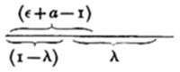
This may be done by re-arranging the patients, so that the E-class may begin from one end of the row, and the A-class from the other: and the least possible number for the EA-class is the common portion, i.e. (ε - (1 - α)), i.e. (ε + α - 1).
Then, as already shown, the least possible number for the EAL-class is the common portion, i.e. (ε + α - 1 - (1 - λ)), i.e. (ε + α + λ - 2).
Q.E.F.
(Analysis.)
Let ABC be the given Triangle, and A'B'C' the required one; and let the ratio, which B'C' has to BC, be 'k'; so that k is less than 1.
Since BB' = CC', and that BC, B'C', are parallel, it may easily be proved, by dropping perpendiculars from B', C', upon BC, which must necessarily be equal, that ∠s B'BC, C'CB, are equal.
Similarly, ∠s A'AC, C'CA, are equal; and so are ∠s A'AB, B'BA.
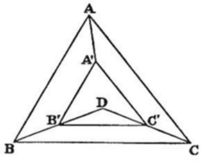
Call ∠ B'BC 'θ'; then ∠ C'CB = θ;
∴∠ C'CA = C - θ = ∠ A'AC;
∴∠ A'AB = A - (C - θ) = ∠ B'BA.
Now ∠s B'BC, B'BA, together = B;
∴θ + A - (C - θ) = B;
∴ 2θ = B + C - A = 180°-2A;
∴θ = 90°-A.
Hence, if BB', CC', be produced to meet at D, Triangle DBC will be isosceles, with a vertical ∠ equal to 2A.
Now, if a Circle is drawn about ABC, and its centre joined to B and C, the Triangle, so formed, will fulfil the same conditions;
hence the centre of this Circle will be D;
hence the construction.
(Synthesis.)
Bisect the sides, and draw perpendiculars, meeting at D. Join D to the vertices B, C. From DB cut off DB' = k·DB. From B' draw B'C' parallel to BC.
Then B'C' is easily proved equal to k·BC.
And if, from B', C', parallels to AB, AC, be drawn, it may easily be proved that they meet on DA, and that they are respectively equal to k·AB, k·AC.
Q.E.F.
Call the bags A, B, C.
If remaining bag is A, chance of observed event = 1/2 chance of drawing white from B and black from C + 1/2 chance of drawing black from B and white from C:
i.e. it = 1/2.{2/3 × 1/2 + 1/3 × 1/2} = 1/4.
Similarly, if remaining bag is B, it is 1/2.{5/6·1/2 + 1/6·1/2} = 1/4; and, if it is C, it is 1/2.{5/6·1/3 + 1/6·2/3} = 7/36.
∴ chances of remaining bag being A, B, or C, are as 1/4 to 1/4 to 7/36; i.e. as 9 to 9 to 7. ∴ they are, in value, (9, 9, 7)/25.
Now, if remaining bag is A, chance of drawing white from it is 5/6; ∴ chance, on this issue, is 5/6·9/25 = 3/10; similarly, for B, it is 2/3·9/25 = 6/25; and, for C, 1/2·7/25 = 7/50. And entire chance of drawing white from the remaining bag is the sum of these; i.e. (15 + 12 + 7)/50 = 34/50 = 17/25.
Let ABC be the given Triangle; and let its sides be divided internally at A', B', C', in extreme and mean ratio.
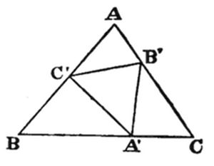
And let M be the area of ABC.
Let BA' = x; then x2 = a·(a - x);
i.e. x2 + ax - a2 = 0;
∴ x = (-a ± a√5)/2 = a/2·(√5 - 1), the other sign being excluded by the terms of the question.
= 1/2·c/2·(√5 - 1).{b - b/2·(√5 - 1)}.sin A,
= 1/8·(√5 - 1)(3 - √5)bc·sin A,
= 1/4·(4√5 - 8)·M = (√5 - 2)·M.
Similarly for BC'A' and CA'B'.
Hence the sum of these 3 Triangles = 3·(√5 - 2)·M, and area of Triangle A'B'C' = (7 - 3√5)·M.
Q.E.F.
This may be deduced from the identity
(a2 + b2)·(c2 + d2) = a2c2 + b2d2 + a2d2 + b2c2.
(a2 + b2)·(c2 + d2) = a2c2 + b2d2 + a2d2 + b2c2; or else = a2c2 + b2d2 + 2acbd + a2d2 + b2c2 - 2adbc, = a2c2 + b2d2 - 2acbd + a2d2 + b2c2 + 2adbc; } i.e. or else = (ac + bd)2 + (ad - bc)2, = (ac - bd)2 + (ad + bc)2. }
Now, if these last 2 sets are identical, (ac + bd) must = (ad + bc); for it cannot = (ac - bd);
i.e., a(c - d) - b(c - d) must = 0;
i.e., (a - b)·(c - d) must = 0;
i.e., one or other of the first 2 sets is the sum of 2 identical squares.
Hence, contranominally, if each of the original sets consists of 2 different squares, their product gives the sum of 2 squares in 2 different ways.
Q. E. D.
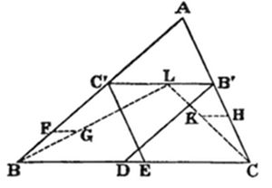
(Analysis.)
Let ABC be the Triangle: and suppose B'C' so placed that B'D, C'E, drawn parallel to the sides, shall together = 2B'C'.
By Euc. I. 34, B'D = C'B, and C'E = B'C:
∴ B'C + C'B = 2B'C'.
Hence, if B'L is cut off equal to half B'C, C'L = half C'B.
Hence construction.
(Synthesis.)
In BC' take any point F: draw FG, parallel to BC, and equal to half BF: and join BG.
Similarly, in CB' take any point H: draw HK, parallel to BC, and equal to half HC: and join CK.
Produce BG, CK, to meet at L: and through L draw C'B' parallel to BC: and from B', C', draw B'D, C'E, parallel to the sides.
∵ FG = half FB; ∴, by similar Triangles, C'L = half C'B;
Similarly B'L = half B'C;
∴ C'B' = half sum of C'B, B'C; i.e. C'B + B'C = 2B'C'.
But, by Euc. I. 34, C'B = B'D, and B'C = C'E;
∴ B'D + C'E = 2B'C'.
Q.E.F.
On July 1, watch gained on clock 5m. in 10h.; i.e. 1/2m. per hour; i.e. 2m. in 4h. Hence, when watch said 'noon', clock said '12h. 2m.'; i. e. clock was 3m. slow of true time, when true time was 12h. 5m.
On July 30, watch lost on clock 1m. in 10h.; i.e. 6sec. per hour; i.e. 19sec. in 3h. 10m. Hence, when watch said '12h. 10m.', clock said '12h. 7m. 19sec.'; i.e. clock was 2m. 19sec. fast of true time, when true time was 12h. 5m.
Hence clock gains, on true time, 5m. 19sec. in 29 days; i.e. 319sec. in 29 days; i.e. 11sec. per day; i. e. 11/(24 × 12)sec. in 5m.
Hence, while true time goes 5m., watch goes 5m. 11/288sec.
Now, when true time is 12h. 5m. on July 31, clock is (2m. 19sec. + 11sec.) fast of it; i.e. says '12h. 71/2m.' Hence, if true time is put 5m. back, clock must be put 5m. 11/288sec. back; i.e. must be put back to 12h. 2m. 29277/288sec.
Hence, on July 31, when clock indicates this time, it is true noon.
Q.E.F.
The nth term is n·(n + 4);
∴ the (n+1)th term is (n + 1)·(n + 5) = (n + 1).{(n + 2) + 3},
= (n + 1)·(n + 2) + 3(n + 1);
∴ S_n = (n·(n + 1)·(n + 2))/3 + 3 · (n·(n + 1))/2 + C; and C = 0;
∴ S_n = n·(n + 1)·((n + 2)/3 + 3/2) = (n·(n + 1)·(2n + 13))/6.
Q.E.F.
Also S100 = (100·101·213)/6 = (100·101·71)/2 = (100·7171)/2 = 717100/2 = 358550.
Q.E.F.
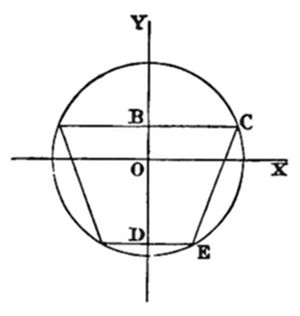
Let DE = x; ∴ BC = 2x.
Area = 3x·(√(r2 - x2) + √(r2 - 4x2)) = max.
let v = x·(√(r2 - x2) + √(r2 - 4x2)) = max.
∴ dv/dx = √(r2 - x2) + √(r2 - 4x2) - x2·(1/(√(r2 - x2)) + 4/(√(r2 - 4x2))) = 0; ∴ (r2 - x2)·√(r2 - 4x2) + (r2 - 4x2)·√(r2 - x2) = x2·(4√(r2 - x2) + √(r2 - 4x2)); ∴ (r2 - 2x2)·√(r2 - 4x2) = -(r2 - 8x2)·√(r2 - x2); ∴ r4 - 4(r2x2 + 4x4)·(r2 - 4x2) = (r4 - 16r2x2 + 64x4)·(r2 - x2); ∴ r6 - 8r4x2 + 20r2x4 - 16x6 = r6 - 17r4x2 + 80r2x4 - 64x6;
∴, omitting r6, and dividing by x2,
48x4 - 60r2x2 + 9r4 = 0; i.e. 16x4 - 20r2x2 + 3r4 = 0;
∴ x2/r2 = (20 ± √(208))/32 = (5 - √(13))/8 (upper sign being inadmissible, though this was not thought out.)
Q.E.F.
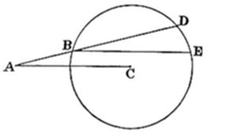
(Analysis.)
Let A be the given Point, and C the centre of the given Circle. Join AC, and let ABD be the required Line. From B draw the Chord BE parallel to AC. Then ∠ DBE = ∠ A. Hence Arc DE = Arc BD; i.e. Arc BE is bisected by D; i.e. D is on perpendicular from C.
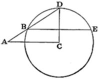
(Synthesis.)
Join AC. From C draw CD perpendicular to AC. Join AD cutting Circle at B. From B draw BE parallel to AC.
It is easily proved that Arc BD = Arc DE. Hence Arc BD subtends, in the Circle, an angle = ∠ DBE = ∠ A.
Q.E.F.
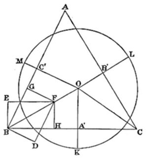
Let ABC be the given Triangle; and let the portions of the radii, outside the Triangle, have to the radius the given ratios k:1, l:1, m:1. (N.B. k, l, m, are supposed to be proper fractions.)
From B draw BD ⊥ BA, and BE ⊥ BC; and make BD have, to BE, the ratio 1 - m:1 - k. Through D draw DF parallel to BA, and EF parallel to BC; and join BF. From F draw FG ⊥ BA, and FH ⊥ BC.
Then FG:FH:: 1 - m:1 - k.
Similarly, draw CO so that the ⊥s, drawn from any Point of it to CA and CB, are in the ratio 1 - l:1 - k; and produce BF to meet it at O.
From O draw OA′, OB′, OC′, ⊥ the sides.
Then OA′:OB′:OC′:: 1 - k:1 - l:1 - m.
Produce OA′ to K, so that OK:OA′:: 1:1 - k.
With centre O, and distance OK, describe a Circle; and produce OB', OC', to meet it at L, M.
Now OK:OA':: 1:1 - k; OA':OB':: 1 - k:1 - l; ∴ OK:OB':: 1:1 - l;
Similarly, OK:OC':: 1:1 - m.
But A'K:OK:: OK - OA':OK:: k:1.
Similarly B'L:radius:: l:1, and C'M:radius:: m:1.
Q.E.F.
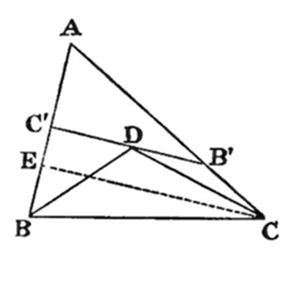
(Analysis.)
Let B'C' be required Line: and let ∠ at C' be right.
Cut off C'D equal to C'B: then DB' = B'C.
Join DB, DC: then ∠ DBC' = 45°, and ∠ B'DC = ∠ B'CD.
From C draw CE ⊥ AB.
Then ∠ B'DC = ∠ DCE; ∴ ∠ B'CD = ∠ DCE.
(Synthesis.)
Hence construction. Draw CE ⊥ AB: bisect ∠ ACE: at B make ∠ ABD = 45°. Let these lines meet at D. Through D draw B'DC'⊥ AB.
Then ∠ C'DB = π - (∠ DC'B + ∠ C'BD) = 45° = ∠ C'BD;
∴ C'D = C'B.
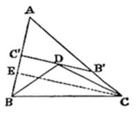
Also ∠ B'DC = ∠ DCE = ∠ DCB'; ∴ DB' = B'C; ∴ C'B' = sum of BC', CB'.
Q.E.F.
Limits of possibility:—
∠ A must not be greater than 90°;
∠ B must not be less than 45°;
∠ C must not be less than half the complement of A,
i.e. not less than (45° − A/2).
Let BC be the common chord, and A, D, the centres.
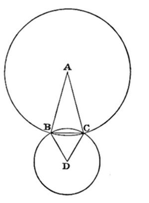
Let ∠ A = 30°, and ∠ D = 60°.
And let BC (which = DB = DC) = 1.
And let AB = x.
Now cos A = √3/2 = (2x2 - 1)/2x2;
∴ √3/2 = 1 - 1/2x2; ∴ 1/2x2 = (2 - √3)/2;
∴ x2 = 1/(2 - √3) = 2 + √3;
∴ areas of Circles are π·(2 + √3) and π;
∴ areas of Sectors are π·(2 + √3)/12 and π/6;
∴ their sum = π·(4 + √3)/12.
Again, area of Triangle ABC = 1/2·(2 + √3)·1/2,
= (2 + √3)/4;
also area of Triangle DBC = √3/4;
∴ their sum = (2 + 2√3)/4 = (1 + √3)/2.
Now the portion, of the smaller Circle, that is within the larger one, is the difference between these two sums;
∴ it = π·(4 + √3)/12 - (1 + √3)/2.
Hence its ratio, to the area of the smaller Circle, is this sum divided by π;
∴ it = (4 + √3)/12 - (1 + √3)/2π,
= 5·732/12 - 2·732/((44/7)) = 0.478 - 0·248/((4/7)),
= 0.478 - 1·736/4 = 0.478 - 0.434 = 0.044.
Q.E.F.
Taking, in order, the bag from which this unknown counter is drawn, the bag from which a red one was twice drawn, and the remaining bag, we see that there are six possible arrangements of 'A', 'B', and 'C': namely—
(1) ABC, | (4) BCA, (2) ACB, | (5) CAB, (3) BAC, | (6) CBA.
Now the chance of the observed event is, in case (1), 1 × 4/9 = 4/9; in case (2), 1 × 1/9 = 1/9; in case (3), 2/3 × 1 = 2/3; in case (4), 2/3 × 1/9 = 2/27; in case (5), 1/3 × 1 = 1/3; and in case (6), 1/3 × 4/9 = 4/27.
Hence the chances of existence, for these 6 states, are proportional to '12, 3, 18, 2, 9, 4'. Hence their actual values are '1/4, 1/16, 3/8, 1/24, 3/16, 1/12'.
Hence the chance of the unknown counter being red is the sum of 1/4 × 1, 1/16 × 1, 3/8 × 2/3, 1/24 × 2/3, 3/16 × 1/3, 1/12 × 1/3;
i.e. it is (36 + 9 + 36 + 4 + 9 + 4)/(9 × 16); which = 98/(9 × 16) = 49/72.
Q.E.F.
Let x = no. of days.
Then (2 × 10 - (x - 1))·x/2 = 14 + {2 × 2 + (x - 1)·2} · x/2;
i.e. 21x/2 - x2/2 = 14 + x + x2;
∴ 3x2 - 19x + 28 = 0; ∴ x = (19 ± 5)/6 = 4 or 7/3.
Now the above solution has taken no account of the discontinuity of increase, or decrease of pace, and is the true solution only on the supposition that the increase or decrease is continuous, and such as to coincide with the above data at the end of each day. Hence '4' is a correct answer; but '7/3' only indicates that a meeting occurs during the third day. To find the hour of this, let y = no. of hours.
Now in 2 days A has got to the end of 19 miles, B to the end of (14 + 6), i.e. 20.
∴ 19 + y·8/12 = 20 + y·6/12.
i.e. y·2/3 = 1 + y·1/2; ∴ y = 6.
Hence they meet at end of 2d. 6h., and at end of 4d.: and the distances are 23 miles, and 34 miles.
Q.E.F.
(1) Let ABC be the given Triangle, and AD the line from the vertex.
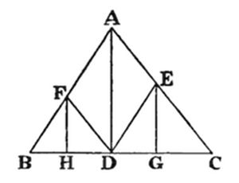
From D draw DE, DF, parallel to the sides; and from E and F draw EG, FH, ⊥ BC.
Then Triangles FBD, EDC, are similar to ABC;
∴ FH: AD:: BD: BC,
and EG: AD:: DC: BC;
∴ (FH + EG): AD:: BC: BC;
∴ FH + EG = AD.
Also, ∵ Triangles AED, AFD, are equal and on the same base AD,
∴ their altitudes are equal; i.e. DH = DG.
Q.E.F.
(2) Let ABC be the given Triangle, and AD the line from the vertex.
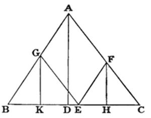
Make CE = BD; from E draw EF, EG, parallel to the sides; and from F, G, draw FH, GK, ⊥ BC.
Then Triangles GBE, FEC, are similar to ABC;
∴ GK: AD:: BE: BC,
and FH: AD:: EC: BC;
∴ (GK + FH): AD:: BC: BC;
∴ GK + FH = AD.
Also BK: BE:: BD: BC;
∴ BK: DC:: EC: BC;
:: HC: DC;
∴ BK = HC.
Q.E.F.
(1) As there was certainly at least one W in the bag at first, the 'a priori' chances for the various states of the bag, 'WWWW, WWWB, WWBB, WBBB,' were '1/8, 3/8, 3/8, 1/8'.
These would have given, to the observed event, the chances '1, 1/2, 1/6, 0'.
Hence the chances, after the event, for the various states, are proportional to '1/8.1, 3/8·1/2, 3/8·1/6'; i.e. to '1/8, 3/16, 1/16'; i.e. to '2, 3, 1'. Hence their actual values are '1/3, 1/2, 1/6'.
Hence the chance, of now drawing W, is '1/3.1 + 1/2·1/2'; i.e. it is 7/12.
Q.E.F.
(2) If he had not spoken, the 'a priori' chances for the states 'WWWW, WWWB, WWBB, WBBB, BBBB', would have been '(1, 4, 6, 4, 1)/16'.
These would have given, to the observed event, the chances '1, 1/2, 1/6, 0, 0'.
Hence the chances, after the event, for the various states, are proportional to '1/16.1, 1/4 · 1/2, 1/6 · 3/8'; i.e. to '1, 2, 1'. Hence their actual values are '1/4, 1/2, 1/4'.
Hence the chance, of now drawing W, is '1/4.1 + 1/2 · 1/2'; i.e. it is 1/2.
Q.E.F.
Let ABC be the given Triangle. Bisect its angles, and draw ⊥s to them, forming the Triangle A′B′C′.
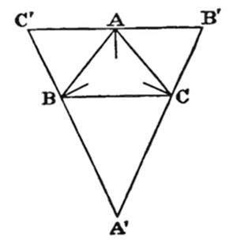
Now ∠ CBA′ = 90° - B/2; and so of the others.
∴ A′ = 180° - (CBA′ + BCA′) = (B + C)/2 = 90°- A/2; ∴ BA′ = a·(cos C/2)/(cos A/2).
Similarly, BC' = c·(cos A/2)/(cos C/2);
∴ A'C' = (a cos2C/2 + c cos2A/2)/(cos A/2 cos C/2) = (a·(s·(s - c))/ab + c·(s·(s - a))/bc)/(s/b·√(((s - a)·(s - c))/ac)), = (s - c + s - a)/(sin B/2) = b/(sin B/2).
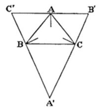
Similarly, A'B' = c/(sin C/2);
∴ area of A'B'C' = (bc cos A/2)/(2 sin B/2 sin C/2);
∴ (area of A'B'C')/(area of ABC) = (bc cos A/2)/(2 sin B/2 sin C/2)·2/(bc sin A), = (cos A/2)/(sin B/2 sin C/2·2 sin A/2 cos A/2), = 1/(2 sin A/2 sin B/2 sin C/2), = abc/(2(s - a)·(s - b)·(s - c)).
Q.E.F.
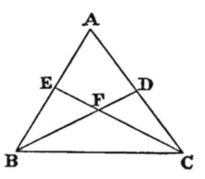
Let ABC be the given Triangle; and let BFD, CFE, be the required lines, so that FB = FC, and Tetragon AEFD = Triangle FBC. And call the angle FBC 'θ'. It will suffice to calculate this angle.
Because Triangle FBC = Tetragon AEFD,
∴ Triangle DBC = Triangle AEC, = Triangle ABC - Triangle EBC;
∴ Triangles DBC, EBC, together = Triangle ABC;
∴ 1/2 · a2/(cot θ + cot C) + 1/2 · a2/(cot θ + cot B) = 1/2 · a2/(cot B + cot C);
∴ 1/(cot θ + cot C) + 1/(cot θ + cot B) = 1/(cot B + cot C);
∴ (2 cot θ + (cot B + cot C))/(cot2 θ + cot θ ·(cot B + cot C) + cot B cot C) = do.;
∴ cot2 θ + cot θ ·(cot B + cot C) + cot B cot C = 2 cot θ·(cot B + cot C) + (cot B + cot C)2;
∴ cot2 θ - cot θ·(cot B + cot C) - (cot2 B + cot B cot C + cot2 C) = 0;
∴ cot θ = 1/2. {cot B + cot C ± √(5 cot2 B + 6 cot B cot C + 5 cot2 C)}.
Q.E.F.
Let k be a No. not containing 2 or 5 as a factor, i.e. let it be prime to 10. Then, if 1/k is reduced to a circulating decimal, and that to a vulgar fraction, the digits of the denominator will be a certain number of 9's; i.e. it will be of the form (10n - 1).
And since this fraction = 1/k, and that k is prime to 10, and so prime to 10^m, the factor (10n - 1) must be a multiple of k.
This plainly holds good in any other scale of notation. Hence, if a is the radix of the scale of notation, and b a No. prime to a, a value may be found for n, which will make (an - 1) a multiple of b.
Q. E. D.
EXAMPLES (not thought out).
(1) With radix 10, find a value, for n, which will make (10n - 1) a multiple of 7.
1/7 = ·142857 = 142857/(106 - 1).
Ans. n = 6.
(2) Let the two given Nos. be 8, 9.
Taking 8 as radix, we get 1/9 = ·07 = 7/(82 - 1).
Ans. n = 2.
(3) Let the two given Nos. be 7, 13.
Taking 7 as radix, we get
1/13 = ·035245631421 = 35245631421/(712 - 1).
Ans. n = 12.
Divide each rod into (n + 1) parts, where n is assumed to be odd, and the n points of division are assumed to be the only points where the rod will break, and to be equally frangible.
The chance of one failure is (n - 1)/n; ∴ n failures is ((n - 1)/n)n = (1 - 1/n)n.
Now, if m = 1/n; then, when n = 1/0, m = 0;
∴ the chance that no rod is broke in the middle = (1 - m)^(1/m), when m = 0;
i.e. it approaches the limit (1 - 0)^(1/0).
And Ans. = 1 - (1 - 0)^(1/0).
Now (1 + 0)^(1/0) = e. Hence if, in the series for e, we call the sum of the odd terms 'a', and of the even terms 'b'; then e = a + b; and (1 - 0)^(1/0) = a - b = 2a - e.
Q.E.F.
[N.B. What follows here was not thought out.]
Now a = 1 + 1/2! + 1/4! + etc. 1 = 1 1/2! = 0.5 1/4! = 0.04166666 etc. 1/6! = 0.00138888 etc. 1/8! = 0.00002480 etc. 1/10! = 0.00000027 etc. —————————— ∴ a = 1.5430806 etc. ∴ 2a = 3.0861612 etc. e = 2.7182818 etc. —————————— ∴ (1 - 0)^(1/0) = 0.3678793 etc. ∴ Ans. = 1 - (1 - 0)^(1/0) = 0.6321207 etc.
Let ABC be the given Triangle, and D the given Point.
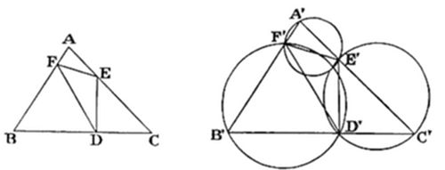
If we make a Triangle D′E′F′, having its angles equal to the given angles, and having D′ as its assigned vertex, the Problem may be solved, if we can circumscribe, about the Triangle D′E′F′, a Triangle similar to ABC.
Now we can construct, on E′F′, F′D′, D′E′, segments of Circles containing angles equal to A, B, C. Hence the Problem may be solved, if we can place, in these Circles, a line B′D′C′, divided in the same proportion as BDC.
This Lemma may be solved as follows. Let G, H, be the centres of the Circles. Join GH, and divide it, at K, proportionally to BDC.
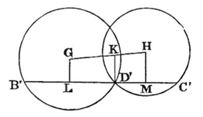
Join KD'; through D' draw B′D′C′ ⊥ KD'; and from G, H, draw GL, HM, ⊥ B′C′.
Now it may be easily proved that
LD': D′M:: GK: KH:: BD: DC.
But B′D′, D′C′, are doubles of LD', D′M;
∴ B′D′: D′C′:: BD: DC.
Q.E.F.
[The construction is now obvious, namely to join B′F′, C′E′, and produce them to meet, on the third Circle (as they may be easily proved to do), at A′; then to divide AB, AC, at F and E, proportionally to A′F′B′, A′E′C′; and then to join DE, DF.]
By inspection, '0, 0, 0' are one set of values.
Subtracting, we get x·(1/y - 1/z) = y - z;
∴ x = yz·(y - z)/(z - y) = -yz, unless y = z, in which case x = 0/0.
Now, by (1), x = xy - yz;
∴, when y ≠ z, x = xy + x;
∴ xy = 0, unless x be infinite.
Similarly, by (2), xz = 0, unless x be infinite.
Hence, if x is finite, and if y≠ z, either x or y = 0, and also either x or z = 0; i.e. either x = 0, or else y = z = 0. But the latter is excluded by our hypothesis. Hence x = 0. Hence yz = 0; i.e. either y or z = 0, and the other may take any value.
This gives us 2 more sets of values, namely
x = y = 0; z has any value; x = z = 0; y has any value.
We have now to ascertain what happens when y = z.
By (1), x/y = x - y;
∴ y2 = x·(y - 1); i.e. x = y2/(y - 1).
Similarly, by (2), x = z2/(z - 1).
This gives us a 4th set of values, namely x = k2/(k - 1), y = z = k; where k has any value.
Now y and z may plainly have any real values, but x is restricted by the equation
y2 - xy + x = 0,
in which y cannot be real, unless (x2 - 4x) > 0. Hence x may have any negative value, and any positive value that is not less than 4; but it cannot have any positive value, less than 4, without making y unreal.
Q.E.F.
Let ABC be the given Triangle, A′, B′, C′, the centres of the semicircles, and DE, FG, HJ, the common tangents; so that DE = α, FG = β, and HJ = γ.
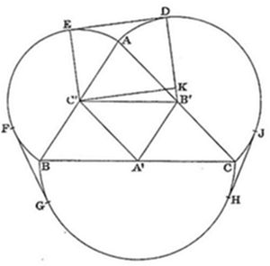
Join B′D, C′E; and from C′ draw C′K ⊥ B′D. Hence CK = α.
Call sides of given Triangle '2a, 2b, 2c'.
Then B′C′ = a, and B′K = b - c;
∴ C′K = √{a2 - (b - c)2};
i.e. α = √{(a - b + c)·(a + b - c)};
similarly, β = √{(a + b - c)·(-a + b + c)},
and γ = √{(-a + b + c)·(a - b + c)};
∴ βγ/α = -a + b + c;
similarly, γα/β = a - b + c,
and αβ/γ = a + b - c;
∴ their sum = a + b + c,
= semi-perimeter of ABC.
Q.E.D.
Take, as unit, a side of one of the Triangles.
If the Tetrahedron is cut by a vertical Plane containing one of the slant edges, the section is a Triangle whose base is √3/2, and whose sides are √3/2, 1;
hence cosine of smaller base-angle
= (3/4 + 1 - 3/4)·1/√3 = 1/√3;
∴ its sine = √2/√3 = its altitude;
and this is the altitude of the Tetrahedron;
∴ volume of Tetrahedron = 1/3·√2/√3·√3/4 = √2/12.
Also altitude of Pyramid = altitude of Triangle whose base is √2, and whose sides are 1, 1;
i.e. it = √2/2;
∴ volume of Pyramid = 1/3·√2/2 = √2/6.
Hence required ratio = √2/6·12/√2 = 2.
Q.E.F.
At first, the chance that bag H shall contain
2 W counters, is 1/4. 1 W and 1 B, is 1/2. 2 B, is 1/4.
∴, after adding a W, the chance that it shall contain
3 W, is 1/4. 2 W, 1 B, is 1/2. 1 W, 2 B, is 1/4.
hence the chance of drawing a W from it is
1/4 × 1 + 1/2 × 2/3 + 1/4 × 1/3: i.e. 2/3.
∴ the chance of drawing a B is 1/3.
After transferring this (unseen) counter to bag K, the chance that it shall contain
3 W, is 2/3 × 1/4; i.e. 1/6. 2 W, and 1 B, is 2/3 × 1/2 + 1/3 × 1/4; i.e. 5/12. 1 W, 2 B, is 2/3 × 1/4 + 1/3 × 1/2; i.e. 1/3. 3 B, is 1/3 × 1/4; i.e. 1/12;
∴ the chance of drawing a W from it is
1/6 × 1 + 5/12 × 2/3 + 1/3 × 1/3; i.e. 5/9.
∴ the chance of drawing a B is 4/9.
Before transferring this to bag H, the chance that bag H shall contain
2 W, is 1/4 × 1 + 1/2 × 1/3; i.e. 5/12. 1 W, 1 B, 1/2 × 2/3 + 1/4 × 2/3; i.e. 1/2. 2 B, 1/4 × 1/3; i.e. 1/12.
∴, after transferring it, the chance that bag H shall contain
3 W, is 5/12 × 5/9; i.e. 25/108. 2 W, 1 B, 5/12 × 4/9 + 1/2 × 5/9; i.e. 50/108. 1 W, 2 B, 1/2 × 4/9 + 1/12 × 5/9; i.e. 29/108. 3 B, 1/12 × 4/9; i.e. 4/108.
Hence the chance of drawing a W is
1/108 × {25 × 1 + 50 × 2/3 + 29 × 1/3}; i.e. 17/27.
i.e. the odds are 17 to 10 on its happening.
Q.E.F.
Let ABC be the given Triangle, and D the given Point.
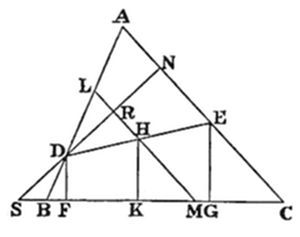
(Analysis.)
Let DE be the line required. Draw DF, EG, ⊥ the base. Then their sum is equal to DE.
Bisect DE at H, and draw HK ⊥ the base: then it is evident that HK is the A.M. of DF, EG, and is equal to half their sum; i.e. it is equal to half of DE. Hence a Circle, drawn with centre H and at distance HD, will pass through E and K, and will touch the base at K.
Through H draw LHM parallel to AC. Then DA is plainly bisected at L. Also LM passes through the centre of the Circle. Hence, if DN is drawn ⊥ LM (or CA), it is a chord of the Circle, and is bisected at R. Produce ND to meet the base produced at S. Hence SDN cuts the Circle, and SK touches it at K. But S can be found, and SK can then be taken, so that sq. of SK may be equal to rect. of SD, SN.
(Synthesis.)
From D draw DN ⊥ AC, and produce it to meet the base produced at S. Take SK, so that its square may be equal to rect. of SD, SN.
Bisect DA at L, and from L draw LM parallel to AC; and from K draw KH ⊥ the base, to meet LM at H. Join DH, and produce it to meet AC at E, and draw DF, EG, ⊥ the base.
Because DL = LA, and that LM is parallel to AC,
∴ DH = HE = HK; ∴ DE = 2 HK.
But DF + EG = 2HK; ∴ DF + EG = DE.
Q.E.F.
[N.B. This proof is incomplete. I have assumed, without proving it, that DH = HK. It may be proved thus. Because sq. of SK = rect. of SD, SN, ∴ DN is a chord of a Circle which touches the base at K; ∴ LM, which bisects it at right angles, passes through the centre. But KH also passes through the centre; ∴ H is the centre; ∴ HD = HK.]
Let x be the number of pennies each had at first.
No. (3) received x, took out (2 + 4), and put in x/2; so that the sack then contained (x·3/2 - 6). Let us write 'a' for '3/2.'
No. (5) received (xa - 6), took out (4 + 1), and put in enough to multiply, by a, its contents when he received it. The sack now contained (xa2 - 6a - 5).
No. (2) took out (1 + 3), and handed on (xa3 - 6a2 - 5a - 4).
No. (4) took out (3 + 5), and handed on
(xa4 - 6a3 - 5a2 - 4a - 8).
No. (1) put in 2. The sack now contained 5x.
Hence xa4 - 6a3 - 5a2 - 4a - 6 = 5x;
∴ x = (6a3 + 5a2 + 4a + 6)/(a4 - 5);
= ((6·33 + 5·32·2 + 4·3·22 + 6·23)·2)/(34 - 5·24);
= ((162 + 90 + 48 + 48)·2)/(81 - 80) = 696 = 2l·18s·0d.
Q.E.F.
Let ABC be the given Triangle, and P the given Point; and call its trilinear co-ordinates 'α, β, γ'.
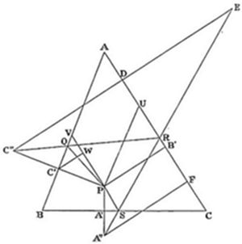
From P draw PA′, PB′, PC′, ⊥ the sides, and therefore equal to α, β, γ. Produce PA′ and PC′ to A'' and C'', making A′A'' = PA′, and C′C″ = PC′. From C″ draw C″D ⊥ AC, and produce it to E, making DE = C''D. Join EA'', cutting AC in R, and BC in S. Join C''R, cutting AB in Q. Join PQ, PS.
The path of the ball is plainly PQRSP; and we have to calculate the length of AR.
Now AR = DR + AD = DR + AB′ - DB′.
First, to calculate DR.
From P draw PU, PV, parallel to AB, AC; from C' draw C'W ⊥ PV; and from A'' draw A''F ⊥ AC.
By similar Triangles, DR: RF:: DE: A''F:: C''D: A''F;
∴ DR: DF:: C''D: (C''D + A''F);
∴ DR = (DF · C''D)/(C''D + AF).
Now ∠ C'VP = A; ∴ ∠ C'PV = 90° - A;
∴ WP = γ sin A;
∴ DB', which = 2 WP, = 2γ sin A.
Similarly, B'F = 2α sin C;
∴ DF = 2 (α sin C + γ sin A).
Again, C'W = γ cos A;
∴ C″D, which = 2 C'W + PB', = 2γ cos A + β.
Similarly, A″F = 2 α cos C + β;
∴ C''D + A″F = 2 (α cos C + γ cos A + β);
∴ DR = ((α sin C + γ sin A) · (2 γ cos A + β))/(α cos C + γ cos A + β).
Now AB' = B'U + UA = B'U + PV,
co sec co sec = β cot A + γ co sec A = (β cos A + γ)/(sin A);
∴ AB' - DB' = (β cos A + γ)/(sin A) - 2 γ sin A,
= (β cos A + γ (1 - 2 sin2 A))/(sin A)
= (β cos A + γ cos 2 A)/(sin A).
Now AR = DR + AB' - DB';
∴ AR = ((α sin C + γ sin A) · (2 γ cos A + β))/(α cos C + γ cos A + β) + (β cos A + γ cos 2 A)/(sin A).
Q.E.F.
Plainly Triangle ADE is similar to ABC.
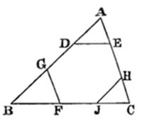
Let k = ratio DE/a = AE/b = AD/c.
Now DG = DE; ∴ DG = ka;
∴ GB = c - ka - kc;
∴ GB/c = 1 - k - k·a/c;
∴ GF (which = GB·b/c) = b - kb - k·ab/c;
but GF = DE = ka;
∴ b - kb - k·ab/c = ka;
∴ bc = k·(bc + ca + ab);
∴ k = bc/(bc + ca + ab) = (1/a)/(1/a + 1/b + 1/c) = (1/a)/m (say).
Hence AD = (c·1/a)/m; DG = 1/m = (c·1/c)/m·
∴ GB (which = c - AD - DG) = (c·(m - 1/a - 1/c))/m = (c·1/b)/m;
Also DE = ka = 1/m = 1/(1/a + 1/b + 1/c)·
Q.E.F.
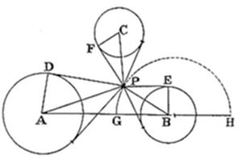
Let A, B, C be the centres of the bases of the towers; and a, b, c their radii. Suppose P the required Point; and from P draw a pair of tangents to each circle, and lines to the centres, which will plainly bisect the angles contained by the pairs of tangents.
Hence angles APD, BPE, CPF are equal;
∴ sin APD = sin BPE = sin CPF;
i.e. a/AP = b/BP = c/CP;
∴ AP: BP: CP:: a: b: c.
Draw a Line through A, B, and on it take Points G, H, such that AG: GB:: AH: HB:: a: b.
Then the Semicircle, described on GH, is the locus of all Points whose distances, from A and B, are proportional to a, b.
Hence, if a Line is drawn through B, C, and a Semicircle described which is the locus of all Points whose distances, from B and C, are proportional to b, c; the intersection of these two Semicircles will be the Point required.
Q.E.F.
[Note. "The locus of all Points whose distances &c.," if represented algebraically, is plainly a Circle, whose centre is on the Line through A, B, and which passes through G and H.]
Draw BC, CE, BD, equal to the given altitudes, so as to form right ∠s at B and C: and produce DB, EC. Join DC, and draw CF ⊥ to it. Join EB, and draw BG ⊥ to it. With centre B, and distance BF, describe a circle: with centre C, and distance CG, describe another: let them meet at A: and join AB, AC.
Call the altitudes of ABC, 'α, β, γ'.
Now α·BC = β·CA = γ·AB
= twice area of ABC;
also, taking BC as unit-line,
BC = 1/BC, CA = CG = 1/CE,
AB = BF = 1/BD;
∴ α/BC = β/CE = γ/BD;
i.e. α, β, γ are proportional to given altitudes;
∴ Triangle ABC is similar to required Triangle.
The rest of the construction is obvious.
Q.E.F.
(1) Geometrically.
Let ABC be given Triangle.
(Analysis.)
Suppose the 3 Squares described, and that their upper edges form the Triangle A'B'C'. Join AA', BB', CC'.
Now plainly, if BB' is produced, the perpendiculars dropped, from any Point of it, upon AB, BC, will be proportional to B'F, B'D.
Similarly for AA' and CC'.
Hence these 3 Lines will meet at the Point from which the perpendiculars, dropped upon the sides of ABC, are proportional to B'C', C'A', A'B'.
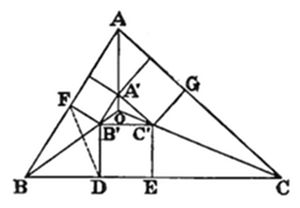
Hence, if Squares is described externally on the sides of ABC, and if their outer edges is produced to form a new Triangle A''B''C'': this Triangle, with these 3 Squares, will form a Diagram wholly similar to that formed by the Triangle ABC, with the 3 Squares inside it.
(Synthesis.)
Hence, if Squares is described externally on the sides of the given Triangle; and if their outer edges is produced to form a new Triangle; and if the sides of the given Triangle is divided similarly to those of the new Triangle: their central portions will be the bases of the required Squares.
Q.E.F.
(2) Trigonometrically.
Let a, b, c be the sides of the given Triangle, and m its area; and let x, y, z be the sides of the required Squares.
Plainly a Circle can be described about the Tetragon BDB'F.
Hence ∠ B'BD = ∠ B'FD.
B'D sin D = B'F sin F;
i.e. x sin (B' + F) = z sin F;
∴ x sin B'cos F + x cos B'sin F = z sin F.
Now ∠ B is supplementary to ∠ B';
∴ x sin B cos F = (z + x cos B) sin F;
cot cot∴ cot F = (z + x cos B)/(x sin B) = cot B'BD.
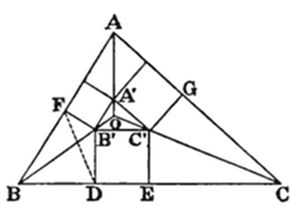
Now BD = x cot B'BD;
∴ BD = (z + x cos B)/(sin B)·
But BD + EC = a - x;
∴ (z + x cos B)/(sin B) + (y + x cos C)/(sin C) = a - x;
∴ (x sin (B + C) + y sin B + z sin C)/(sin B sin C) = a - x;
i.e. (x sin A + y sin B + z sin C)/(sin B sin C) = a - x.
Now plainly these Triangles are similar; so that
a/x = b/y = c/z.
Hence, multiplying the last equation, throughout, by one or other of these equal fractions, we get
(a sin A + b sin B + c sin C)/(sin B sin C) = a2/x - a; ∴ (a sin A + b sin B + c sin C)/(a sin B sin C) = a/x - 1; ∴ a/x = (a sin A + b sin B + c sin C)/(a sin B sin C) + 1.
Hence, multiplying above and below by one or other of the equal fractions a/(sin A), b/(sin B), c/(sin C),
a/x = (a2 + b2 + c2)/(ab sin C) + 1; = (a2 + b2 + c2)/2m + 1 = b/y = c/z.
Q.E.F.
It may be assumed that the 3 Points form a Triangle, the chance of their lying in a straight Line being (practically) nil.
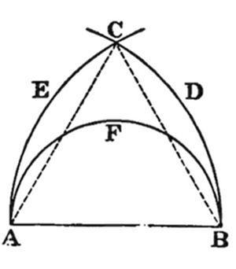
Take the longest side of the Triangle, and call it 'AB': and, on that side of it, on which the Triangle lies, draw the semicircle AFB. Also, with centres A, B, and distances AB, BA, draw the arcs BDC, AEC, intersecting at C.
Then plainly the vertex of the Triangle cannot fall outside the Figure ABDCE.
Also, if it fall inside the semicircle, the Triangle is obtuse-angled: if outside it, acute-angled. (The chance, of its falling on the semicircle, is practically nil.)
Hence required chance = (area of semicircle)/(area of fig·ABDCE)·
Now let AB = 2a: then area of semicircle = (π a2)/2; and area of Fig. ABDCE = 2 × sector ABDC - Triangle ABC;
= 2·(4π a2)/6 - √3·a2 = a2·(4π/3 - √3);
∴ chance = (π/2)/(4π/3 - √3) = 3/(8 - 6√3/π)·
Q.E.F.
Let KL = MN = a,
KN = LM = b,
KM = LN = c;
and let ∠s LMK, MKL, KLM be equal to 'A, B, C'; and similarly for the ∠s of the other facets.
From K draw KT ⊥ base-facet LMN. Also draw KR, KS, ⊥ LM, MN. And join TR, TM, TS.
It is easily proved that ∠s TRM, TSM are right.
The required volume is 1/3·KT·LMN. The area of LMN is of course known. All we need is the length of KT. Now KT2 = KS2 - TS2; and KS plainly = c·sin B. Hence all we need is the length of TS.
Now this requires a preliminary Lemma, in itself a very pretty problem, namely—
LEMMA (1).
Given, in Tetragon RMST, sides RM, MS, and ∠ RMS, and that ∠s TRM, TSM are right: find TS.
Now TS/(sin TRS) = TR/(sin TSR);
also TS cos TSR + TR cos TRS = RS;
∴ TS/(sin TRS) = TR/(sin TSR), = (TS cos TSR + TR cos TRS)/(sin TRS cos TSR + sin TSR cos TRS), = RS/(sin RMS) = MS/(sin MRS); ∴ TS/(cos MRS) = MS/(sin MRS); i.e. TS = MS cot MRS.
Q.E.F.
Hence this requires another Lemma, to find the value of cot MRS (or tan MRS, which will do as well, and makes a prettier problem).
LEMMA (2).
Given, in Triangle RMS, sides RM, MS, and ∠ RMS: find tan MRS.
tan MRS = (sin MRS)/(cos MRS) = (RS sin MRS)/(RS cos MRS), = (MS sin RMS)/(RM - MS cos RMS).
Q.E.F.
Hence, in Tetragon RMST, we have by Lemma (1),
TS = MS cot MRS;
and, by Lemma (2), cot MRS = (RM - MS cos RMS)/(MS sin RMS),
= (c cos A - c cos B cos C)/(c cos B sin C) = (cos A - cos B cos C)/(cos B sin C);
∴ TS = c/(sin C)·(cos A - cos B cos C).
Now KT2 = KS2 - TS2;
∴ it = (c sin B)2 - c2/sin2C·(cos A - cos B cos C)2,
= c2/sin2C·{(sin B sin C)2 - (cos A - cos B cos C)2};
therefore KT = c/(sin C) multiplied by √(sin2B sin2C - cos2B cos2C - cos2A + 2 cos A cos B cos C),
= c/(sin C) multiplied by
√((1 - cos2B)·(1 - cos2C) - cos2B cos2C - cos2A + 2 cos A cos B cos C),
= c/(sin C) · √(1 - (cos2A + cos2B + cos2C) + 2 cos A cos B cos C),
which is symmetrical, as it ought to be.
Now area of LMN = (ab sin C)/2;
hence volume of Tetrahedron
= abc/6·√(1 - (cos2A + cos2B + cos2C) + 2 cos A cos B cos C).
Q.E.F.
Let ∠ BAD = θ, ∠ CAD = φ.
Now (sin (B + θ))/(sin θ) = c/((ma/(m + n)))
= (c·(m + n))/ma;
∴ sin B cot θ + cos B = (c·(m + n))/ma;
∴ cot θ = (c·(m + n))/(ma·sin B) - cot B,
= ((m + n)·(a cos B + b cos A) - ma cos B)/(ma sin B),
= ((m + n)b cos A + na cos B)/(ma sin B);
i.e.cot θ = ((m + n)·b/(sin B)·cos A + na cot B)/ma,
= ((m + n)a cot A + na cot B)/ma,
= ((m + n) cot A + n cot B)/m.
Similarly, cot φ = ((m + n) cot A + m cot C)/n.
Q.E.F.
COROLLARIES.
(1) m cot θ - n cot φ = n cot B - m cot C.
(2) (cot B + cot φ)/(cot C + cot θ) = m/n.
(3) If Triangle is equilateral,
cot θ = (m + 2n)/m·1/√3,
cot φ = (n + 2m)/n·1/√3;
∴ (cot θ)/(cot φ) = (mn + 2n2)/(mn + 2m2);
∴ (tan θ)/(tan φ) = (mn + 2m2)/(mn + 2n2);
i.e., if CD'B' is drawn ⊥ to AD, B'D'/D'C = (mn + 2m2)/(mn + 2n2);
e.g., if m/n = 1/2, B'D'/D'C = 2/5·
(4) Let tan A = 1, tan B = 2, tan C = 3;
then cot θ = (m + n + n·1/2)/m = (2m + 3n)/2m,
cot φ = (m + n + m·1/3)/n = (3n + 4m)/3n;
∴ (tan θ)/(tan φ) = (6mn + 8m2)/(6mn + 9n2);
from which, if (tan θ)/(tan φ) were given, we could find m/n from a Quadratic Equation.
I tried various values, to find one which would give rational values for m and n, and found that 2/3 would do, as it leads to the Quadratic
2(6mn + 9n2) - 3(6mn + 8m2) = 0,
in which (B2 - 4AC) becomes, after dividing all through by 6, (12 + 4·4·3), i.e. 49.
The Quadratic is 4m2 + mn - 3n2 = 0;
from which m/n = (-1 ± 7)/8 = 3/4; which solves the Problem 'Given a Triangle ABC, having the tangents of its angles equal to 1, 2, 3: divide BC at D, so that, if AD is joined, and CD'B' drawn ⊥ to it, the ratio B'D'/D'C may be 2/3'. The answer is 'Divide it so that BD/DC = 3/4'.
We know that the equation
'(a2 + 4b2 + 4c2) + (4a2 + b2 + 4c2)
+ (4a2 + 4b2 + c2) = 9(a2 + b2 + c2)'
is identically true.
Hence a2 + b2 + c2
= 1/9·{(a2 + 4b2 + 4c2) + (4a2 + b2 + 4c2) + (4a2 + 4b2 + c2)};
= 1/9·{(a2 + 4b2 + 4c2 + 8bc - 4ca - 4ab)
+ (4a2 + b2 + 4c2 - 4bc + 8ca - 4ab)
+ (4a2 + 4b2 + c2 - 4bc - 4ca + 8ab)};
= 1/9·{(-a + 2b + 2c)2 + (2a - b + 2c)2 + (2a + 2b - c)2};
= ((-a + 2b + 2c)/3)2 + ((2a - b + 2c)/3)2 + ((2a + 2b - c)/3)2.
Now (-a + 2b + 2c) = 3(b + c) - (a + b + c);
∴, if (a + b + c) is a multiple of 3, so also is (-a + 2b + 2c);
∴ (-a + 2b + 2c)/3 is an integer;
and similarly for the other 2 fractions.
Also it may be proved that, if (-a + 2b + 2c)/3 is equal to a, or b, or c, then a, b, c can be arranged in A.P.
First, let (-a + 2b + 2c)/3 = a;
then -a + 2b + 2c = 3a; i.e. b + c = 2a;
secondly, let (-a + 2b + 2c)/3 = b;
then -a + 2b + 2c = 3b; i.e. 2c = a + b;
thirdly, let (-a + 2b + 2c)/3 = c;
then -a + 2b + 2c = 3c; i.e. 2b = c + a.
And similarly for the other 2 fractions.
Hence, contranominally, if a, b, c can not be arranged in A.P., the 2 sets of squares have no common term.
Q. E. D.
Numerical Examples (not thought out).
a2 | b2 | c2 | ((-a + 2b + 2c)/3)2 | ((2a - b + 2c)/3)2 | ((2a + 2b - c)/3)2 12 | 42 | 42 | 52 | 22 | 22 32 | 42 | 82 | 72 | 62 | 22 42 | 52 | 92 | 82 | 72 | 32
Let AB, AC, be the given Lines, and P the given Point.
Through P draw PD parallel to AB; from DC cut off DE equal to AD; join EP, and produce it to meet AB at F.
Because AD = DE, and that DP is parallel to AB,
∴ FP = PE.
Now let GPH be any other line through P;
then ∠ PFH > ∠ PEG.
∠ FPH = ∠ GPE, and ∠ PFH > ∠ PEG,
∴ PH > PG, and Triangle PFH > Triangle PGE.
To each add Tetragon AFPG;
∴ Triangle AGH > Triangle AEF.
And so of any other line through P.
Hence AEF is the least possible Triangle.
Q.E.F.
Let each side of each Square = 2.
Then LG = √3, MG = (√2 - 1);
∴ LM( = JK) = √(3 - (2 + 1 - 2√2))
= 2^(3/4);
∴ OJ = OK = 1/(2^(1/4)).
Take O as origin, the X-axis parallel to AD, and the Y-axis to AB; and let JK be part of the Z-axis.
Let equation to plane containing Triangle CDG be
x cos α + y cos β + z cos γ - p = 0,
where p is length of perpendicular dropped, from O, upon this plane, and meeting it somewhere in LG.
Hence we can find p from equation to LG, in the XZ-plane, which will be
x cos α + z cos γ - p = 0;
now this line contains L, whose co-ordinates are (1, 1/(2^(1/4))), and G, whose co-ordinates are (√2, -1/(2^(1/4)));
∴ cos α + 1/(2^(1/4)) · cos γ - p = 0,
and √2 · cos α - 1/(2^(1/4)) · cos γ - p = 0;
∴ (√2 - 1) · cos α = 2/(2^(1/4)) · cos γ = 2^(3/4) · cos γ;
∴ (cos α)/(2^(3/4)) = (cos γ)/(√2 - 1) = 1/(√(2^(3/2) + 3 - 2^(3/2))) = 1/√3;
∴ cos α = (2^(3/4))/√3, cos γ = (√2 - 1)/√3;
∴ p = (2^(3/4))/√3 + (√2 - 1)/(2^(1/4)·√3) = (√2 + 1)/(2^(1/4)·√3).
Now area of CDG = √3;
∴ volume of pyramid, whose base is CDG and whose vertex is O, = (√2 + 1)/(3·2^(1/4));
and there are eight such pyramids in the solid;
∴ their sum = (8(√2 + 1))/(3·2^(1/4)).
Also volume of pyramid, whose base is ABCD, and whose vertex is O, = 4/(3·2^(1/4));
and there are 2 such pyramids in the solid;
∴ their sum = 8/(3·2^(1/4));
∴ volume of solid = (8(2 + √2))/(3·2^(1/4)) = (8·2^(1/4) ·(√2 + 1))/3
Q.E.F.
Let ABC be the given Triangle, and O the given Point; and let OD, its distance from BC, be less than either OE or OF, its distances from CA, AB.
Draw a line GH equal to OE, and GK ⊥ it and equal to OF; and join HK; and about the Triangle GHK describe a Circle; and place in it a line KL equal to OD; and join LH.
Because sqs of KL, LH = sqs of KG, GH, and that KL is less than either KG or GH, ∴ LH is greater than either;
∴ a Circle, with centre O, and radius equal to LH, will cut all three Lines, in two Points each. Describe this Circle.
Then sqs of MD, DO = sqs of PE, EO;
also sq. of LH = sqs of RF, FO;
∴ sqs of MD, DO, LH = sqs of PE, RF, EO, FO;
but sqs of DO, LH = sqs of KL, LH,
= sqs of GH, GK = sqs of EO, FO;
∴ sq. of MD = sqs of PE, RF;
∴ 4 times sq. of MD = 4 times sqs of PE, RF;
i.e. sq. of MN = sqs of PQ, RS.
Hence MN, PQ, RS, can be sides of a right-angled Triangle.
Q.E.F.
Calling the angles 1/x, 1/y, 1/z, of 360°, we must have
1/x + 1/y + 1/z = 1/2;
an Indeterminate Equation with 3 unknowns.
Plainly none of them can be so small as 2.
(1) Let x = 3; then 1/y + 1/z = 1/6.
Now, if 1/y = k/(k + l) × 1/6, 1/z will = l/(k + l) × 1/6:
hence k can only be 1, or 2, or 3, or 6; and the same is true of l.
(N.B. It is assumed that the fractions k/(k + l), l/(k + l), are in their lowest terms.)
Let 1/y be not less than 1/z. Then k/(k + l) is not less than 1/2.
Then its possible values are 1/2, so that l/(k + l) = 1/2
2/3, | 1/3 3/4, | 1/4 3/5 | 2/5 6/7, | 1/7.
This gives 5 sets of values for 1/x, 1/y, 1/z, namely:
1/3, 1/12, 1/12; 1/3, 1/9, 1/18; 1/3, 1/8, 1/24; 1/3, 1/10, 1/15; 1/3, 1/7, 1/42.
(2) Let x = 4. Then 1/y + 1/z = 1/4, and, as before, k can only be 1, or 2, or 4, and the same is true of l. Hence the possible values for k/(k + l) are 1/2, so that l/(k + l) = 1/2
2/3, | 1/3 4/5, | 1/5.
This gives 3 more sets of values for 1/x, 1/y, 1/z, namely:
1/4, 1/8, 1/8; 1/4, 1/6, 1/12; 1/2, 1/5, 1/20.
(3) Let x = 5; then 1/y + 1/z = 3/10.
Hence denominator must contain factor "3", and k can be only 1, or 2, or 5, or 10; and the same is true of l.
Hence possible values of k/(k + l) are 1/2, so that l/(k + l) = 1/2
2/3, | 1/3 5/6, | 1/6.
This gives 2 sets of values for 1/x, 1/y, 1/z, namely:—
1/5, 1/5, 1/10; 1/5, 1/4, 1/20;
but the latter (a fact overlooked in thinking out) we have had already.
(4) Let x = 6; then 1/y + 1/z = 1/3.
Hence k can be only 1, or 3, and the same is true of l.
Hence possible values for k/(k + l) are 1/2, so that l/(k + l) = 1/2
3/4, 1/4.
This gives 2 sets of values, namely:—
1/6, 1/6, 1/6; 1/6, 1/4, 1/12;
but the latter (a fact overlooked in thinking out) we have had already.
There is no use in giving, to x, any values greater than 6; for these would make 1/y + 1/z greater than 1/3, so that one or other must be greater than 1/6 — that is, either y or z must be less than 6, and we should get old values over again.
Hence there are 10 different shapes.
Q.E.F.
The 10 sets of angles (I am not certain that they were all thought out) are
(1) | 120°, | 30°, | 30°; (2) | 120°, | 40°, | 20°; (3) | 120°, | 45°, | 15°; (4) | 120°, | 36°, | 24°; (5) | 120° | 513/7°, | 84/7°; (6) | 90°, | 45°, | 45°; (7) | 90°, | 60°, | 30°; (8) | 90°, | 72°, | 18°; (9) | 72°, | 72°, | 36°; (10) | 60°, | 60°, | 60°.
Write k for α/(α + β). Now the counters must be either both white, or one white and one black. Let chance of first condition be x; hence chance of second is (1 - x). Hence chance of drawing white is x × 1 + (1 - x) × 1/2.
∴ x + (1 - x)/2 = k; ∴ x = 2k - 1; ∴ (1 - x) = 2 - 2k.
Let a counter now be drawn and prove white; then chance of 'observed event,' in 1st condition, is 1, and, in 2nd condition, 1/2;
Hence the chances, of the existence of these two conditions, are proportional to (2k - 1) × 1, (2 - 2k) × 1/2; i. e. are proportional to 2k - 1, 1 - k;
hence these chances actually are (2k - 1)/k, (1 - k)/k;
hence the chance of now drawing white,
is (2k - 1)/k × 1 + (1 - k)/k × 1/2; i.e. (3k - 1)/2k.
Hence the effect of one repetition of the experiment has been to change k into (3k - 1)/2k.
Hence a second repetition of it will change
(3k - 1)/2k into (3 × (3k - 1)/2k - 1)/(2 × (3k - 1)/2k); i.e. into (7k - 3)/(6k - 2).
We have now to discover the law (if there is one) for the series
k, (3k - 1)/2k, (7k - 3)/(6k - 2),
regarding these as identical functions of 1, 2, 3.
We can write the 1st and 2nd term in the form of the 3rd, thus:—
(k - 0)/(0 × k - (-1)), (3k - 1)/(2k - 0), (7k - 3)/(6k - 2)
and, by inspection, we see that each is of the form
((2n - 1) × k - (2^(n - 1) - 1))/((2n - 2) × k - (2^(n - 1) - 2)),
where n denotes the place of the term.
Suppose this law to hold for n terms, what will be the effect of repeating the experiment once more?
We know that it changes k into (3k - 1)/2k. Hence the new chance will be
(3 × ((2n - 1) × k - (2^(n - 1) - 1))/((2n - 2) × k - (2^(n - 1) - 2)) - 1)/(2 × ((2n - 1) × k - (2^(n - 1) - 1))/((2n - 2) × k - (2^(n - 1) - 2)));
i.e. (k × (3·2n - 3 - 2n + 2) - 3·2^(n - 1) + 3 + 2^(n - 1) - 2)/((2^(n + 1) - 2) × k - (2n - 2));
i.e. ((2^(n + 1) - 1) × k - (2n - 1))/((2^(n + 1) - 2) × k - (2n - 2));
i.e. the (n + 1)|^(th) term of the series will follow the same law. But we know that the law holds for the 1^(st), 2^(nd), and 3^(rd) terms. Hence it holds universally.
Hence, after m repetitions of the experiment, the chance of drawing white will be the (m + 1)|^(th) term of the above series; i.e. it will be
((2^(m + 1) - 1) × k - (2^m - 1))/((2^(m + 1) - 2) × k - (2^m - 2)).
Now, for k, write α/(α + β).
Then chance is ((2^(m + 1) - 1) × α - (2^m - 1)· (α + β))/((2^(m + 1) - 2) × α - (2^m - 2)· (α + β)); i.e. ((2^(m + 1) - 2^m)α - (2^m - 1)· β)/((2^(m + 1) - 2^m)α - (2^m - 2)· β); i.e. (2^m · (α - β) + β)/(2^m · (α - β) + 2β).
Q.E.F.
Example—Let chance be 9/10; and then let experiment be repeated 5 times more.
Here α = 9, β = 1;
∴ chance becomes (32 × 8 + 1)/(32 × 8 + 2), i.e. 257/258.
Let ABCD be the socket. Revolve the Tetrahedron until the plane, in it, DOA has taken the new position D'QA'; and let edge DA, in its new position, meet the socket-rim AC at R. From A' draw A'L ⊥ XY-plane. Join OR, and produce it to L. And draw RM, LN, the y-ordinates of R and L.
Then co-ordinates of A' are ON, NL, LA'.
Call OM, MR, 'x', y''; and OA, OR, OD, 'a, a', h'; and ∠ XOR 'θ'.
Plainly the vertical axis of the Tetrahedron always coincides with the Z-axis.
Hence A moves on the surface of a cylinder,
i.e. x2 + y2 = a2 (1)
Now ∠ XAC = 150°;
∴ Equation to AC is y = - 1/√3· (x - a);
i.e. x + √3 · y = a (2)
Also Equation to OR is x/(cos θ) = y/(sin θ) = a;
∴, at R, x'/(cos θ) = y'/(sin θ) = a'; (3)
∴, by (2), a' · cos θ + √3 · a' · sin θ = a;
∴ a' = a/(cos θ + √3 · sin θ) (4)
i.e. a: h:: a/(cos θ + √3· sin θ): h - z;
∴ h - z = h/(cos θ + √3· sin θ);
but cos θ = x/a, and sin θ = y/a;
∴ h - z = (a h)/(x + √3 · y);
i.e. (x + √3· y) · (h - z) = a h (5)
Equations (1) and (5) give the required Locus.
Q.E.F.
Let the Nos of bottles, taken out of the 3 days, be 'x, y, z'. Let each bottle have cost 10v pence, and therefore be sold for 11v pence.
Then the Treasurer's receipts, on the 3 days, were (x - 1)0.11v, y 0.11 v - v, (z - 1)0.11 v - v; yielding, as profits (i.e. as remainders after deducting cost-price of bottles taken out), xv - 11 v, yv - v, zv - 12 v. Then these 3 quantities are equal.
Hence y = x - 10, and z = x + 1;
∴ total No. of bottles, being (x + y + z), = 3x - 9.
Now total profits are (x + y + z)·v - 24v; i.e. (3x - 33)v;
∴ profit, per bottle = ((3x - 33) · v)/(3x - 9); and this must = 6;
∴ (x - 11)·v = (x - 3)·6.
Also z·11v = 11 × 240; i.e. (x + 1)·11v = 11 × 240;
∴ (x - 11)/(x + 1) = (6·(x - 3))/240;
∴ (x + 1)·(x - 3) = 40·(x - 11);
∴ x2 - 2x - 3 = 40x - 440;
∴ x2 - 42x + 437 = 0.
Now 422 - 4 × 437 = 1764 - 1748 = 16;
∴ x = (42 ± 4)/2 = 23 or 19;
∴ No. of bottles = 60 or 48; but it is a multiple of 5;
∴ it = 60.
Also (x + 1)·11v = 11 × 240; i.e. 24v = 240;
∴ v = 10;
i.e. the wine was bought @ 8/4 a bottle, and sold @ 9/2 a bottle.
Q.E.F.
§ 1. Let ∠ BAD = k·A, ∠ CBE = l·B, ∠ ACF = m·C.
Then ∠ ABE = (1 - l)·B.
Now ∠ BC'D = ∠ C'AB + ∠ C'BA.
i.e. k·A + (1 - l)·B = C. (1)
Similarly, l·B + (1 - m)·C = A; (2)
and m·C + (1 - k)·A = B. (3)
From equations (1) and (3), l and m may be found in terms of k: but these, taken along with k, will not be similar functions of the single variable k. We must have k a certain function of A, B, C, and θ (say); l a similar function of B, C, A, and θ; and m a similar function of C, A, B, and θ; i.e. we must have
k = f(A, B, C, θ), l = f(B, C, A, θ), m = f(C, A, B, θ).
Now we know, by (1), that kA - lB = C - B;
i.e. A·f(A, B, C, θ) - B·f(B, C, A, θ) = C - B.
Now, as an experiment, let
k·A = xA + yB + zC + θ, l·B = xB + yC + z A + θ;
then kA - lB = (x - z)·A + (y - x)·B + (z - y)·C;
∴ x - z = 0; i.e. x = z; z - y = 1; i.e. z = y + 1.
These conditions will be fulfilled, if we make y = 1, and x = z = 2; so that
kA = 2A + B + 2C + θ, lB = 2B + C + 2A + θ;
which would make
f(A, B, C, θ) mean (2A + B + 2C + θ)/A.
Now this may plainly be simplified by omitting (A + B + C), which is constant; and we then have k = (A + C + θ)/A; or, in a yet simpler form, by again subtracting 180°, k = (θ - B)/A.
Similarly l = (θ - C)/B, m = (θ - A)/C.
Q.E.F.
§ 2. We see that kA = θ - B, so that ∠ ADC is plainly equal to θ; and so are ∠s BEA, CFB.
This gives us a geometrical construction, namely to draw lines from A, B, C, so that each makes the same angle θ with the opposite side.
§ 3. Let us now ascertain the limits within which the value of θ must lie.
We know that kA = θ - B.
Now kA is not greater than A; ∴ θ - B is not greater than A; i.e. θ is not greater than A + B;
i.e. θ is not greater than the supplement of C;
and of course this is true for each of the three angles A, B, C; i.e. if A, B, C, be the order of the angles in a descending order of magnitude, θ is not greater than supplement of A.
Again kA is not less than 0.
Hence θ - B is not less than 0; i.e. θ is not less than B;
and of course this is true for each angle.
Hence if A, B, C, be the order in a descending order of magnitude, θ is not less than A, and not greater than 180° - A.
Q.E.F.
§ 4. We have now to ascertain the ratio which B′C′ bears to BC.
In Triangle ABC′, whose ∠s are (θ - B), (180° - θ - A), (180° - C), we have
AC′ = AB/(sin AC′B)·sin ABC′ = c/(sin C)·sin (θ + A) = a/(sin A)·sin (θ + A); BC′ = AB/(sin AC′B)·sin BAC′ = c/(sin C)·sin (θ - B) = a/(sin A)·sin (θ - B)
∴, by symmetry, AB′ = a/(sin A)·sin (θ - A).
Now B′C′ = AC′ - AB′;
∴ it = a/(sin A){sin (θ + A) - sin (θ - A)},
= a/(sin A)·2 cos θ sin A = a 2 cos θ.
Hence a′/a = b′/b = c′/c = 2 cos θ.
Q.E.F.
Before folding the Plane containing the Triangles, the locus of their vertices is plainly a Line parallel to their common base. Hence, if the base of the Tetrahedron = 1, we may imagine a slip of paper, whose width is √3/2, attached to the front facet of the Tetrahedron, and wrapped round towards the right; and the upper edge of this slip will plainly be the locus of the vertices. This slip may be conveniently regarded as divided into equilateral Triangles, placed base-downwards and base-upwards alternately, and it is evident that these Triangles will successively cover the facets of the Tetrahedron, in the order 'front, right side, base, left side, front, &c.'; and its upper edge, made up of the bases of the inverted constituent Triangles, will plainly run as follows. Calling the successive Triangles, after the first (which occupies the front facet of the Tetrahedron), 'α' (base-up), 'β' (base-down), 'γ' (base-up), 'δ' (base-down), 'ε' (base-up), and so on, the locus consists of the bases of α, γ, &c. Now 'α' will occupy the right facet, its base coinciding with the back-edge of the Tetrahedron; 'β' will occupy the base of the Tetrahedron, its base coinciding with the front-edge; 'γ' will occupy the left facet, its base coinciding with the back-edge; and so on. Hence the locus runs down the back-edge; up again; and so on. Which answers Question (1).
Q.E.F.
We may therefore, in answering the other three questions, consider the slip before it is folded, and calculate the positions of the vertices along its upper edge: and the problems thus become 'plane' ones.
(2) Gives us a right-angled Triangle, whose left-hand base-angle is 15°, and whose altitude is √3/2. We must calculate its base, and then, deducting half the base of the initial Triangle (i. e. deducting 1/2), we shall get the distance, measured along the upper edge of the slip, from the vertex of the initial Triangle to the vertex of the given Triangle; and from that we can calculate how many times we must go down and up the back-edge to reach it. Call the base of this right-angled Triangle 'x.' Then √3/2 ÷ x = tan 15°.
Now call tan 15° 't'; then 2t/((1 - t2)) = tan 30° = 1/√3;
∴ 1 - t2 = 2√3·t; t2 + 2√3·t - 1 = 0;
∴ t = (-2√3 ± 4)/2 = (rejecting negative value) 2 - √3.
∴ x = √3/(2 (2 - √3)) = √3/2 (2 + √3) = √3 + 3/2.
Deducting 1/2, we get (√3 + 1) as the required distance.
Now √3 = 1.7 &c.; ∴ distance = 2.7 &c.
Hence we must go down back-edge, up again, and then about 0.7 down again. This answers question (2).
(3) We need to go down the back-edge, and up again; i.e. we must use up the upward bases of 'α' and 'γ'. Hence the base of the required right-angled Triangle is 2 1/2. Hence the required left-hand base-angle is
tan −1(√3/2 ÷ 5/2); i.e. tan −1√3/5.
Hence, for the required base-angle, we have sin/cos = √3/5;
∴ sin/√3 = cos/5 = 1/√(28); ∴ sin = √(3/28) = √(84)/28, = (rather over 9)/28; (79·!)/((41·28 etc.!)/(0·32 etc.))
Now (by mem. tech.) sin −1.3 = 17.45 etc.°. sin −1.4 = 23.57 etc.°.
and the required angle is about 1/5 of the way from one to the other. But the difference is almost exactly 6°. Hence we must add, to the lesser, about 1 1/5 degrees, or 1.20°. And the total will be about 18.65°.
(4) Here the right-angled Triangle has, for its base, 3 1/2.
∴ the required base-angle has, for its tangent,
(√3/2 ÷ 7/2); i.e. √3/7;
∴ sin/√3 = cos/7 = 1/√(52); ∴ sin = √(3/52) = nearly √(1/17),
= nearly √(17)/17. Now √(17) = 4.12 etc. ∴ sin = 0.24 etc.
Now sin −1.2 = 11.53 &c°.; and we must go about half-way to the next angle, namely 17.45 &c°. The difference is about 6°; ∴ we must add about 3°. Hence the answer is about 14.53°.
Let ABC be the given Triangle, and P the given Point.
Bisect the sides of ABC at D, E, F; and join these Points.
First, let P be within the Triangle DEF.
Draw HG parallel to BC, so that its distance from BC may be double the distance of P from BC; join GP, HP, and produce them to meet BC in L, M. From L draw LK parallel to AC; join KP, and produce it to meet AC at N: join MN.
Because HG is parallel to LM,
∴ GP = PL, and HP = PM;
∵ KL is parallel to GN, and that LP = PG,
∴ KP = PN; ∴ MN is parallel to HK.
Now the Triangles PGH, PLM, are equal in all respects;
∴ GH = LM. Similarly KL = GN, and MN = HK.
If P lies on FE, HG and LM vanish, and the Hexagon becomes a Parallelogram.
If P lies at D, the Hexagon becomes the line BC.
If P lies outside the Triangle DEF, the Problem is insoluble.
Q.E.F.
We know that, if a bag contained 3 counters, 2 being black and one white, the chance of drawing a black one would be 2/3; and that any other state of things would not give this chance.
Now the chances, that the given bag contains (α) BB, (β) BW, (γ) WW, are respectively 1/4, 1/2, 1/4.
Add a black counter.
Then the chances, that it contains (α) BBB, (β) BWB, (γ) WWB, are, as before, 1/4, 1/2, 1/4.
Hence the chance, of now drawing a black one,
= 1/4.1 + 1/2 · 2/3 + 1/4 · 1/3 = 2/3.
Hence the bag now contains BBW (since any other state of things would not give this chance).
Hence, before the black counter was added, it contained BW, i.e. one black counter and one white.
Q.E.F.
THE END.